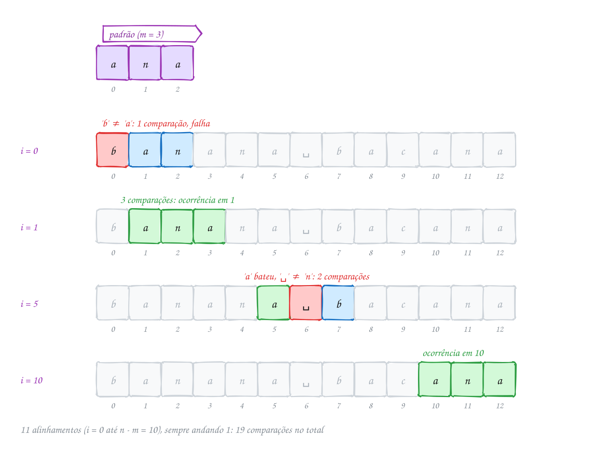
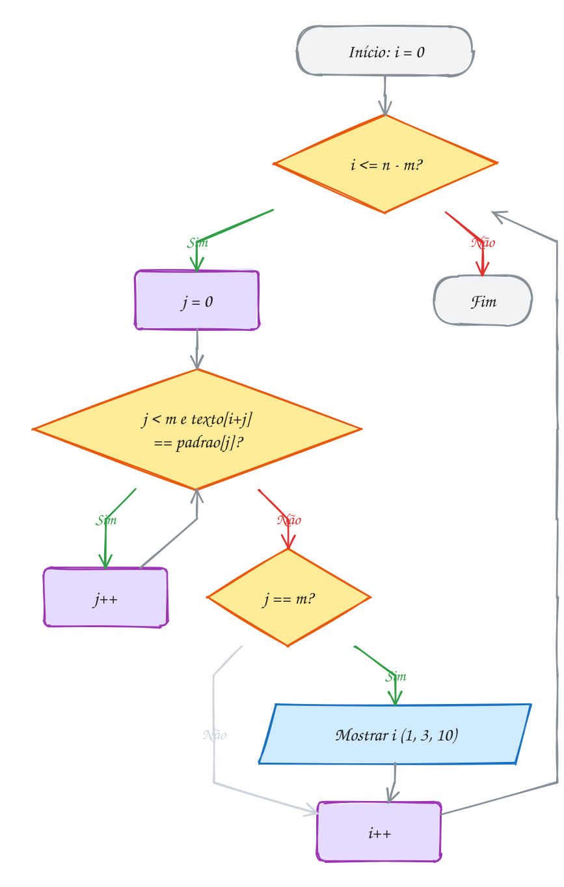
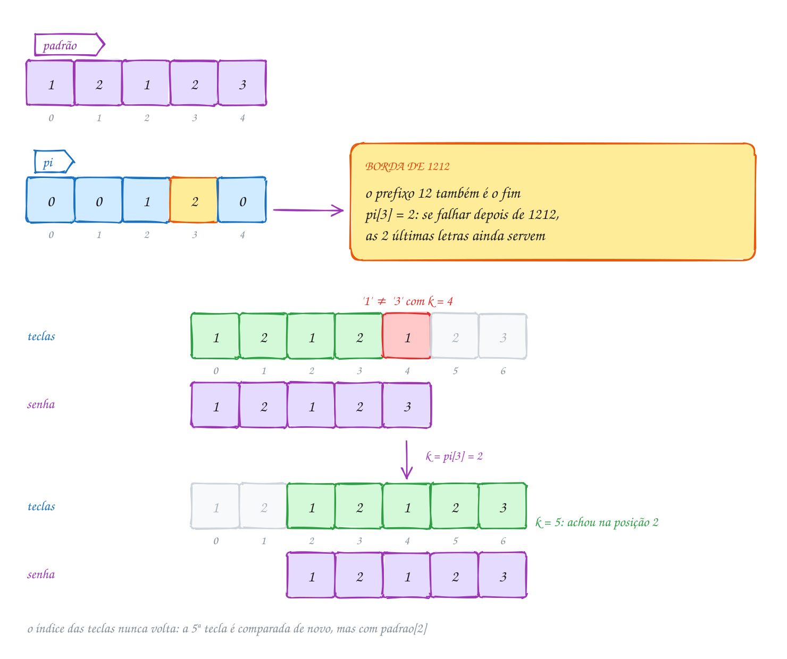
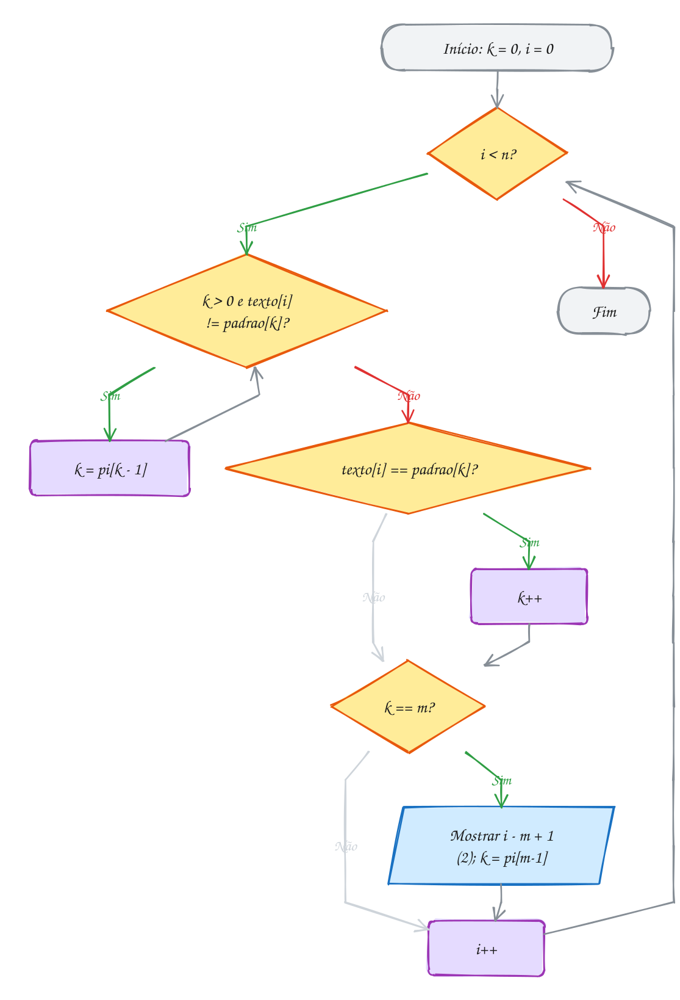
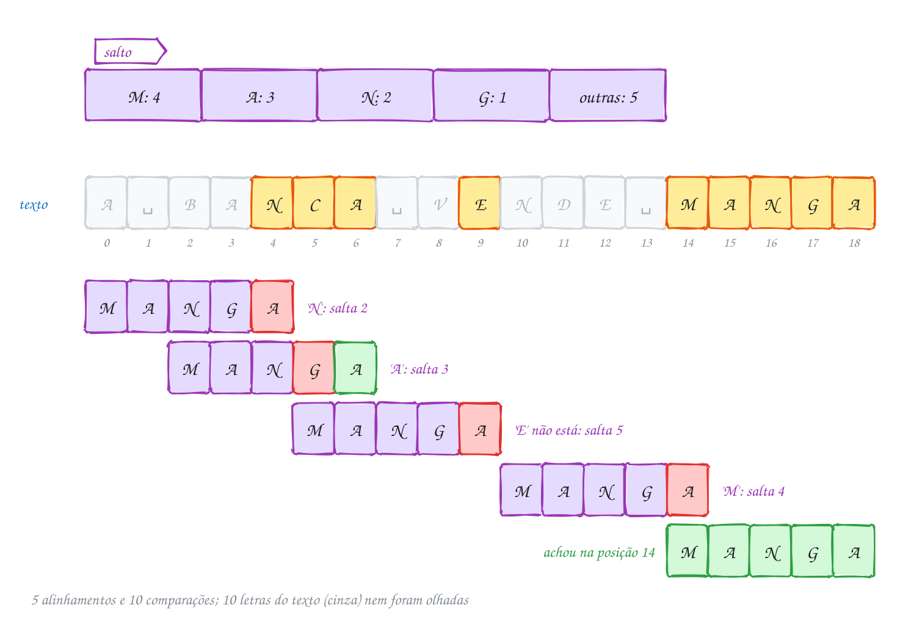
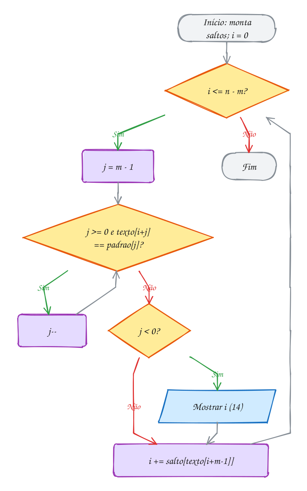
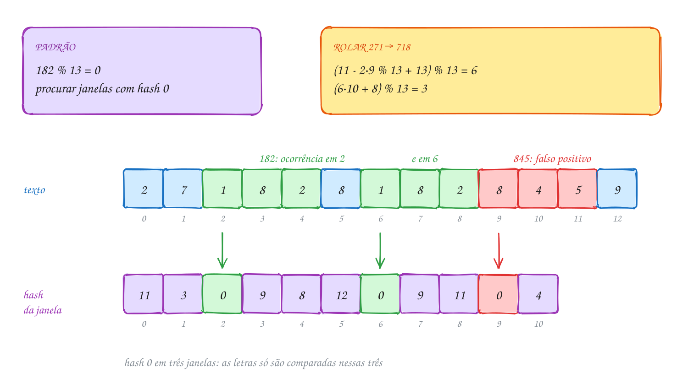
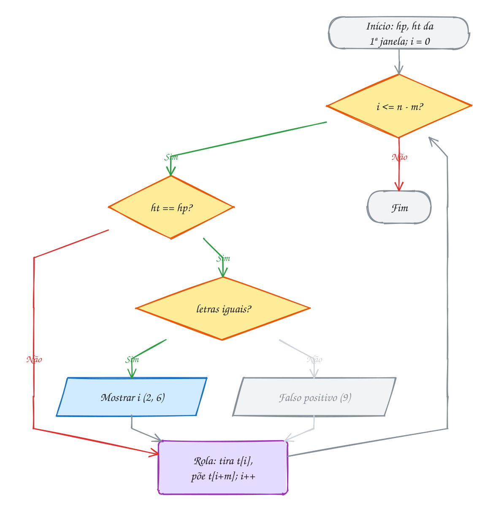
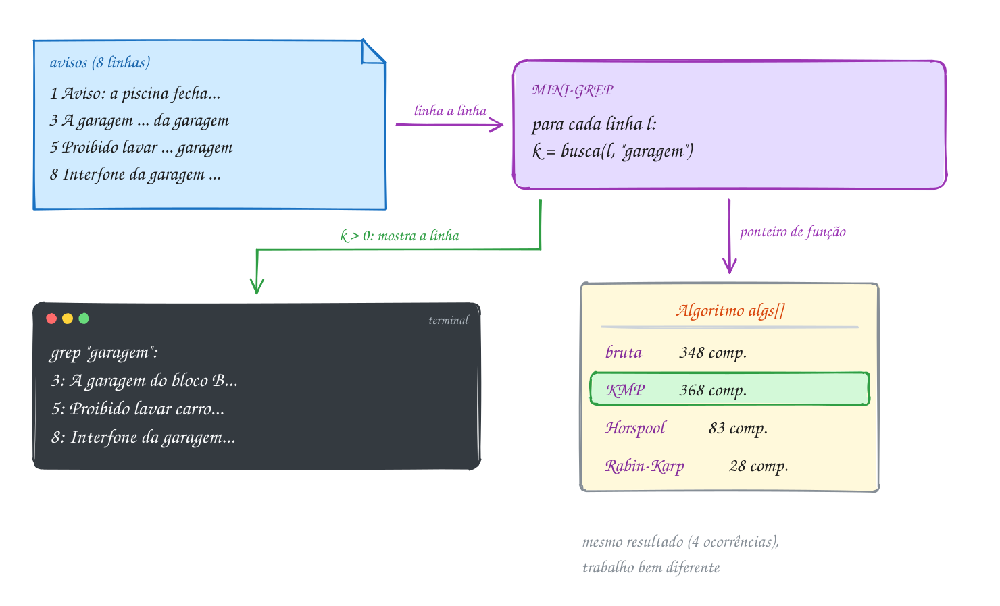
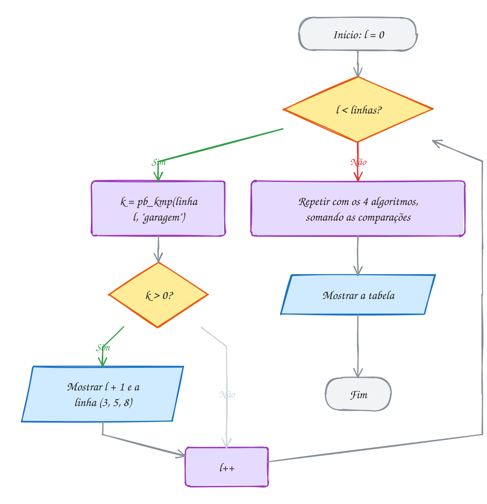

[!IMPORTANT] Mundo 8 · Técnicas de projeto · Rota do jogo: etapa 28 de 29
Missão: achar padrões em texto com KMP, Horspool e Rabin-Karp.
Vem de: Módulo 21 · Programação dinâmica. Segue para: Módulo 25 · Estruturas especiais.
Checkpoints desta fase:
- Ler os assuntos 0157 a 0161 e refazer os exemplos
- Resolver os 4 exercícios de cada assunto, escrevendo o código sozinho
- Fechar a lista prática (P2401 a P2430)
- Enfrentar os desafios do módulo
- Chefão: resolver as questões de prova do módulo sem consultar
Achar um padrão de m letras num texto de n letras: força bruta,
KMP, Horspool e Rabin-Karp, e no fim um mini-grep que compara os quatro.
Depende de strings (0041), hashing (0105) e ponteiros para função (0050). É
complemento: não cai direto na prova do PPGI.
strstr: ocorrências sobrepostas e a armadilha do
size_tclock()Revise strings (0041), ponteiros (0047), size_t (0003), análise de custo
(0072), invariantes (0073), hashing (0105) e ponteiros para função (0050).
Nos diagramas, o texto é uma fileira de gavetas com o padrão embaixo. Verde é letra que bateu ou ocorrência achada, vermelha a que falhou (ou o falso positivo), amarela a que decide o próximo passo, roxa o padrão, azul texto ainda não comparado e cinza o que não precisou ser olhado.
Os exemplos contam comparações de letra, que dão o mesmo número em qualquer
máquina; o tempo de relógio só aparece no A321. No 0161 os algoritmos viram o
TAD padroes.h, compilado junto com os exemplos da pasta. Tudo trabalha com
bytes: letra acentuada em UTF-8 quebra o uso como índice (0159).
| # | Assunto |
|---|---|
| 0157 | Força bruta |
| 0158 | KMP |
| 0159 | Horspool |
| 0160 | Rabin-Karp |
| 0161 | Juntando tudo |
[!NOTE] Cada assunto é um capítulo: Conceito (a explicação), Exemplos de uso (programas que compilam sozinhos: rode com o comando abaixo de cada um e compare com a saída no fim do código) e Exercícios (cada um é um arquivo em
material/com o esqueleto, as dicas e o espaço para a resposta; resoluções em_respostas/24-busca-de-padroes/).
Você aperta Ctrl+F no PDF do contrato de aluguel e digita "multa". Em menos
de um segundo o leitor pinta cada lugar em que a palavra aparece. Por trás
disso há um problema clássico: dado um texto de n letras e um
padrão de m letras, com m <= n, dizer em que posições o padrão
aparece. É o mesmo problema que o grep resolve num arquivo e que um
antivírus resolve ao procurar a assinatura de um vírus dentro de um programa
(CORMEN et al., 2024, cap. 32). Este módulo apresenta quatro jeitos de
resolvê-lo, e o primeiro é o mais direto de todos.
Imagine uma régua de papel com o padrão escrito nela, deitada sobre o texto.
Você encosta a régua no começo do texto, confere letra por letra e depois
escorrega a régua uma casa para a direita. Cada posição da régua é um
alinhamento: encostar o padrão no texto a partir da posição i. Se as
m letras do padrão batem com texto[i..i+m-1], há uma ocorrência em
i. Em "banana", o padrão "ana" tem ocorrência em 1, porque texto[1..3] é
"ana".
A força bruta, também chamada de busca ingênua, é exatamente a régua:
ela testa todos os alinhamentos, de i = 0 até i = n - m, e em cada um
compara da esquerda para a direita, desistindo na primeira letra diferente
(FEOFILOFF, 2009, cap. 13). O último alinhamento é n - m porque, a partir
dele, o padrão já não cabe no que sobra do texto. Com n = 6 e m = 3, os
alinhamentos são 0, 1, 2 e 3: quatro ao todo, ou n - m + 1.
for (int i = 0; i <= n - m; i++) {
int j = 0;
while (j < m && texto[i + j] == padrao[j]) j++;
if (j == m) printf("ocorrência em %d\n", i);
}
Como a régua anda sempre de uma em uma casa, a força bruta acha também as ocorrências que se sobrepõem, isto é, que dividem letras. Em "banana", "ana" aparece em 1 e em 3, e as duas ocorrências compartilham o "a" da posição 3. Um algoritmo que pulasse o padrão inteiro depois de achar perderia a segunda.
Quanto isso custa? O trabalho se mede em comparações de letra. Num texto
comum, quase todo alinhamento falha logo na primeira ou na segunda letra,
então o total fica perto de n. O pior caso aparece quando quase todo
alinhamento casa o padrão inteiro antes de falhar na última letra: procurar
"00001" num código de vinte zeros compara cinco letras em cada um dos 16
alinhamentos. No geral, o teto é (n - m + 1) · m comparações, o que dá
O(n·m). A memória extra é O(1): só os índices i e j (ZIVIANI, 2010,
cap. 8). O A314 mede esse pior caso.
A biblioteca padrão já traz uma busca pronta. strstr(texto, padrao), de
string.h, devolve um ponteiro para a primeira ocorrência, ou NULL se o
padrão não aparece (DEITEL; DEITEL, 2011, cap. 8). A posição sai da
diferença de ponteiros, p - texto. Para achar a próxima, chame de novo a
partir de p + 1; se chamar a partir de p + m, as sobreposições somem (o
A313 compara os dois). Não escreva pelo ponteiro que o strstr devolve
quando o texto é um literal: isso é comportamento indefinido (assunto 0048).
Os próximos assuntos atacam o desperdício da força bruta. Depois de casar
k letras e falhar, ela joga fora tudo o que leu e recomeça uma casa
adiante. O KMP aproveita o que já leu; o Horspool pula casas; o Rabin-Karp
troca a comparação de letras por uma conta.
[!WARNING] O laço vai até
i <= n - m, inclusive: com<, a última ocorrência some. Guardenememint:strlendevolvesize_t, sem sinal, e com padrão maior que o texton - mdá a volta, vira um número enorme e o laço lê além do'\0'.
Procure "ana" em "banana bacana": são 11 alinhamentos, com ocorrências no 1, no 3 e no 10. O 0 falha no "b" e o 5 falha no espaço:

Em C, contando as comparações de letra:
#include <stdio.h>
#include <string.h>
// mostra cada posição onde o padrão aparece; devolve quantas vezes apareceu
int forca_bruta(const char *texto, const char *padrao, int *comparacoes) {
int n = (int) strlen(texto);
int m = (int) strlen(padrao);
int achados = 0;
*comparacoes = 0;
for (int i = 0; i <= n - m; i++) { // cada alinhamento possível
int j = 0;
while (j < m) {
(*comparacoes)++;
if (texto[i + j] != padrao[j]) {
break; // errou uma letra: desiste daqui
}
j++;
}
if (j == m) { // as m letras bateram
printf(" achou na posição %d\n", i);
achados++;
}
}
return achados;
}
int main(void) {
const char *placa = "banana bacana";
int comparacoes;
printf("Procurando \"ana\" em \"%s\":\n", placa);
int total = forca_bruta(placa, "ana", &comparacoes);
printf("%d ocorrências, %d comparações\n", total, comparacoes);
return 0;
}
// Saída:
// Procurando "ana" em "banana bacana":
// achou na posição 1
// achou na posição 3
// achou na posição 10
// 3 ocorrências, 19 comparações
As 19 comparações, alinhamento por alinhamento (n = 13, m = 3):
| i | trecho do texto | comparações | resultado |
|---|---|---|---|
| 0 | ban |
1 (b ≠ a) |
falha |
| 1 | ana |
3 | ocorrência |
| 2 | nan |
1 | falha |
| 3 | ana |
3 | ocorrência |
| 4 | na␣ |
1 | falha |
| 5 | a␣b |
2 (o espaço ≠ n) |
falha |
| 6, 7 | ␣ba, bac |
1 cada | falha |
| 8 | aca |
2 (c ≠ n) |
falha |
| 9 | can |
1 | falha |
| 10 | ana |
3 | ocorrência |
O teto seria 11 · 3 = 33; deu 19 porque quase todo alinhamento falha cedo.
O laço de fora anda o alinhamento i, o de dentro anda a letra j. O i
sempre avança 1, tenha achado ou não:

Exemplo A313 · O strstr e as risadas do grupo
#include <stdio.h>
#include <string.h>
// conta as ocorrências de padrao com strstr; depois de achar, recomeça
// 'pulo' letras à frente: 1 conta as sobrepostas, strlen(padrao) não conta
int conta(const char *texto, const char *padrao, size_t pulo) {
int total = 0;
const char *p = strstr(texto, padrao);
while (p != NULL) {
printf(" %td", p - texto); // posição = endereço achado - início
total++;
p = strstr(p + pulo, padrao);
}
return total;
}
int main(void) {
const char *msg = "kkkkkk boa";
printf("\"kk\" com pulo 1, posições:");
int a = conta(msg, "kk", 1);
printf(" -> %d vezes\n", a);
printf("\"kk\" com pulo 2, posições:");
int b = conta(msg, "kk", strlen("kk"));
printf(" -> %d vezes\n", b);
// strstr devolve NULL quando não acha e o próprio texto para padrão vazio
printf("\"haha\": %s\n", strstr(msg, "haha") == NULL ? "NULL" : "achou");
printf("\"\": aponta para a posição %td\n", strstr(msg, "") - msg);
return 0;
}
// Saída:
// "kk" com pulo 1, posições: 0 1 2 3 4 -> 5 vezes
// "kk" com pulo 2, posições: 0 2 4 -> 3 vezes
// "haha": NULL
// "": aponta para a posição 0
gcc ~/LPEDC/material/A313.c -o ~/LPEDC/material/A313 && ~/LPEDC/material/A313
Exemplo A314 · O pior caso: um código cheio de zeros
#include <stdio.h>
#include <string.h>
// força bruta que só conta: devolve as comparações de letra feitas
long comparacoes(const char *texto, const char *padrao, int *achados) {
int n = (int) strlen(texto);
int m = (int) strlen(padrao);
long comp = 0;
*achados = 0;
for (int i = 0; i <= n - m; i++) {
int j = 0;
while (j < m) {
comp++;
if (texto[i + j] != padrao[j]) {
break;
}
j++;
}
if (j == m) {
(*achados)++;
}
}
return comp;
}
int main(void) {
// 20 dígitos: dezenove zeros e um 1 no fim (n = 20)
const char *codigo = "00000000000000000001";
const char *padroes[] = {"10000", "00001", "00000"};
int achados;
for (int k = 0; k < 3; k++) {
long c = comparacoes(codigo, padroes[k], &achados);
printf("%s: %d ocorrência(s), %3ld comparações\n", padroes[k], achados, c);
}
printf("teto (n - m + 1) * m = %d\n", (20 - 5 + 1) * 5);
return 0;
}
// Saída:
// 10000: 0 ocorrência(s), 16 comparações
// 00001: 1 ocorrência(s), 80 comparações
// 00000: 15 ocorrência(s), 80 comparações
// teto (n - m + 1) * m = 80
gcc ~/LPEDC/material/A314.c -o ~/LPEDC/material/A314 && ~/LPEDC/material/A314
Exercício E937 · ★☆☆
O narrador gritou tanto que a transcrição ficou "gol gol golaco do gol". Escreva int conta_ocorrencias(const char *texto, const char *padrao), que faz a busca por força bruta, mostra cada posição onde o padrão começa e devolve quantas vezes ele aparece (ocorrências sobrepostas também contam). No main, procure "gol" e "o" na transcrição:
Saída esperada:
gol: 0 4 8 18 (4 vezes)
o: 1 5 9 13 16 19 (6 vezes)
Exercício E939 · ★★☆
O cliente escreve "pix" de todo jeito. Escreva a função int busca_sem_caixa(const char *texto, const char *padrao), uma força bruta que ignora a diferença entre maiúsculas e minúsculas, mostra a posição e o trecho achado (do jeito que está no texto) e devolve o total. Teste com a mensagem abaixo e o padrão "pix":
"Recebi um PIX, mandei outro Pix e tem um pix agendado"
Saída esperada:
posição 10: PIX
posição 28: Pix
posição 41: pix
3 ocorrências
Exercício E940 · ★★☆
A tia quer as abreviações do grupo por extenso. Escreva a função
int substitui(const char *texto, const char *velho, const char *novo,
char saida[], int cap)
que copia texto para saida trocando cada ocorrência de velho por novo e devolve quantas trocas fez. Nunca escreva mais que cap posições em saida (contando o '\0'). Use a força bruta para saber se velho começa em cada posição i. Teste:
texto: "vc vem? se vc não vier, vc avisa" velho: "vc" novo: "você"
Saída esperada:
você vem? se você não vier, você avisa
3 trocas
Exercício E942 · ★★★
Caça-palavras da revistinha. A grade tem 5 linhas e 8 colunas, guardada numa matriz de char (cada linha é uma string). Procure as palavras "SOL", "MAR", "LUA", "CEU" e "RIO" na horizontal (da esquerda para a direita) e na vertical (de cima para baixo), por força bruta: teste cada casa como começo e cada direção.
S O L X M A R Z
A Q L U A P E O
B M U S O L X R
R A A I B Z X A
A R R C E U P S
Saída esperada:
SOL: linha 0, coluna 0, horizontal
SOL: linha 2, coluna 3, horizontal
MAR: linha 0, coluna 4, horizontal
MAR: linha 2, coluna 1, vertical
LUA: linha 1, coluna 2, horizontal
LUA: linha 1, coluna 2, vertical
CEU: linha 4, coluna 3, horizontal
RIO: não está na grade
A central do alarme desarma quando a senha 12123 aparece no teclado. Ela
não guarda o histórico das teclas: só lembra quanto da senha já foi
digitado. Você digita 1 2 1 2, erra e aperta 1. A central precisa
recomeçar do zero? A força bruta recomeçaria: voltaria no texto e testaria o
alinhamento seguinte. Só que as últimas teclas lidas, 1 2 1, já formam o
começo da senha, e jogar isso fora é desperdício.
O KMP, de Knuth, Morris e Pratt, é a busca que nunca volta no texto: lê
cada letra uma única vez, da esquerda para a direita, e custa O(n + m) em
qualquer caso (KNUTH; MORRIS; PRATT, 1977). O segredo está numa observação
simples. Se k letras já casaram e a próxima falhou, você sabe exatamente o
que acabou de ler: as últimas k letras do texto são padrao[0..k-1]. Então
a pergunta "quanto do que li ainda serve?" depende só do padrão, e pode
ser respondida antes de olhar o texto (CORMEN et al., 2024, cap. 32).
A resposta tem nome. Um prefixo próprio de uma string é um pedaço do
começo dela que não é ela inteira; um sufixo é um pedaço do fim. A
borda de uma string é o maior prefixo próprio que também é sufixo
(SZWARCFITER; MARKENZON, 2010). Em 1212, o prefixo 12 também fecha a
string, então a borda é 12. Em 121, a borda é 1. Em 1213, nenhum
prefixo próprio termina a string, e a borda é vazia, de tamanho 0. A borda
diz quanto do casamento sobrevive a uma falha: se a central leu 1212 e a
próxima tecla não serve, o 12 do fim ainda pode ser o começo da senha.
A tabela π (pi) guarda a borda de cada começo do padrão: pi[j] é o
tamanho da borda de padrao[0..j]. Para 12123, os pedaços são 1, 12,
121, 1212 e 12123, com bordas de tamanho 0, 0, 1, 2 e 0. Logo
pi = [0, 0, 1, 2, 0]. A tabela se calcula com a mesma lógica da busca: é
o padrão sendo procurado dentro dele mesmo, em O(m).
Com a tabela pronta, a busca guarda um único número, k, quantas letras do
padrão já casaram. Para cada letra do texto, três coisas podem acontecer. Se
a letra é padrao[k], o casamento cresce: k++. Se não é e k > 0, o
casamento encolhe para a borda, k = pi[k - 1], e a mesma letra é
testada de novo; isso pode se repetir várias vezes, até a letra servir ou
k chegar a 0. Se k chega a m, achou uma ocorrência, e k recua para
pi[m - 1] para não perder ocorrências sobrepostas (CORMEN et al., 2024,
cap. 32).
while (k > 0 && texto[i] != padrao[k]) k = pi[k - 1];
if (texto[i] == padrao[k]) k++;
Volte ao alarme. As teclas 1 2 1 2 casam quatro letras, k = 4. A quinta
tecla, 1, não é o 3 esperado. A central consulta pi[3] = 2: o 12 do
fim continua valendo, e k vira 2. Agora o 1 é testado contra
padrao[2], que é 1, e casa. O padrão escorregou duas casas sem que a
central relesse nada.
Por que o custo é linear? Olhe o k. Ele sobe no máximo 1 por letra do
texto, então sobe no máximo n vezes no total. Cada recuo o diminui pelo
menos 1, e ele nunca fica negativo, então não dá para recuar mais vezes do
que ele subiu. Somando subidas e recuos, a busca faz no máximo 2n
comparações. A tabela custa O(m) pelo mesmo argumento, e o total é
O(n + m). A garantia vale para qualquer texto, inclusive os que levam a
força bruta ao pior caso.
[!WARNING] O recuo é um
while, não umif: depois dek = pi[k - 1]a letra pode continuar não servindo. Comif, a busca "acha" ocorrências que não existem (o E947 testa isso). E os livros usam convenções diferentes para a tabela (começando em 1, deslocada, com -1): misturar convenções dá erro de um.
A central de um alarme desarma quando a senha 12123 aparece no teclado, sem
guardar histórico. Com as teclas 1 2 1 2 1 2 3, a quinta tecla falha, a
central usa pi[3] = 2 e o padrão escorrega duas casas; a senha se completa na
sétima tecla:

Em C, o printf do laço mostra o k depois de cada tecla:
#include <stdio.h>
#include <string.h>
#define MAX_PADRAO 32
// pi[j] = tamanho da maior borda de p[0..j] (prefixo próprio que também é sufixo)
void calcula_pi(const char *p, int m, int pi[]) {
int k = 0; // tamanho da borda atual
pi[0] = 0;
for (int j = 1; j < m; j++) {
while (k > 0 && p[j] != p[k]) {
k = pi[k - 1]; // tenta a borda menor
}
if (p[j] == p[k]) {
k++;
}
pi[j] = k;
}
}
// lê o texto uma vez só, da esquerda para a direita; k = letras já casadas
int kmp(const char *texto, const char *padrao) {
int n = (int) strlen(texto);
int m = (int) strlen(padrao);
int pi[MAX_PADRAO];
int k = 0, achados = 0;
calcula_pi(padrao, m, pi);
for (int i = 0; i < n; i++) {
while (k > 0 && texto[i] != padrao[k]) {
printf(" '%c' não continua os %d casados: k = pi[%d] = %d\n",
texto[i], k, k - 1, pi[k - 1]);
k = pi[k - 1];
}
if (texto[i] == padrao[k]) {
k++;
}
printf("tecla %c: k = %d\n", texto[i], k);
if (k == m) {
printf(" senha completa! começou na posição %d\n", i - m + 1);
achados++;
k = pi[k - 1]; // continua valendo para a próxima
}
}
return achados;
}
int main(void) {
const char *senha = "12123";
const char *teclas = "1212123";
int pi[MAX_PADRAO];
int m = (int) strlen(senha);
calcula_pi(senha, m, pi);
printf("pi de %s:", senha);
for (int j = 0; j < m; j++) {
printf(" %d", pi[j]);
}
printf("\n");
kmp(teclas, senha);
return 0;
}
// Saída:
// pi de 12123: 0 0 1 2 0
// tecla 1: k = 1
// tecla 2: k = 2
// tecla 1: k = 3
// tecla 2: k = 4
// '1' não continua os 4 casados: k = pi[3] = 2
// tecla 1: k = 3
// tecla 2: k = 4
// tecla 3: k = 5
// senha completa! começou na posição 2
A tabela π de 12123; o k é a borda do pedaço anterior:
| j | pedaço p[0..j] |
p[j] vs p[k] |
k depois | pi[j] |
borda |
|---|---|---|---|---|---|
| 0 | 1 |
(sempre 0) | 0 | 0 | nenhuma |
| 1 | 12 |
2 vs 1: não |
0 | 0 | nenhuma |
| 2 | 121 |
1 vs 1: sim |
1 | 1 | 1 |
| 3 | 1212 |
2 vs 2: sim |
2 | 2 | 12 |
| 4 | 12123 |
3 vs 1: não, recua para pi[1] = 0; 3 vs 1: não |
0 | 0 | nenhuma |
Na busca, foram 8 comparações para 7 teclas (uma a mais pelo recuo). A força bruta faria 11.
O recuo é um laço dentro do laço do texto e mexe só em k. O índice i
nunca anda para trás:

Exemplo A315 · Todas as bordas de uma palavra
#include <stdio.h>
#include <string.h>
#define MAX 32
void calcula_pi(const char *p, int m, int pi[]) {
int k = 0;
pi[0] = 0;
for (int j = 1; j < m; j++) {
while (k > 0 && p[j] != p[k]) {
k = pi[k - 1];
}
if (p[j] == p[k]) {
k++;
}
pi[j] = k;
}
}
// a maior borda de p tem pi[m-1] letras; a borda da borda tem pi[b-1], e assim
// por diante: seguir a corrente de pi dá TODAS as bordas, da maior à menor
void mostra_bordas(const char *p) {
int m = (int) strlen(p);
int pi[MAX];
calcula_pi(p, m, pi);
printf("%-9s pi =", p);
for (int j = 0; j < m; j++) {
printf(" %d", pi[j]);
}
printf(" bordas:");
int b = pi[m - 1];
if (b == 0) {
printf(" nenhuma");
}
while (b > 0) {
printf(" \"%.*s\"", b, p); // as b primeiras letras
b = pi[b - 1];
}
printf("\n");
}
int main(void) {
mostra_bordas("arara");
mostra_bordas("ananas");
mostra_bordas("aaaa");
mostra_bordas("cacaraca");
mostra_bordas("brasil");
return 0;
}
// Saída:
// arara pi = 0 0 1 2 3 bordas: "ara" "a"
// ananas pi = 0 0 1 2 3 0 bordas: nenhuma
// aaaa pi = 0 1 2 3 bordas: "aaa" "aa" "a"
// cacaraca pi = 0 0 1 2 0 0 1 2 bordas: "ca"
// brasil pi = 0 0 0 0 0 0 bordas: nenhuma
gcc ~/LPEDC/material/A315.c -o ~/LPEDC/material/A315 && ~/LPEDC/material/A315
Exemplo A316 · O refrão que se repete
#include <stdio.h>
#include <string.h>
#define MAX 32
void calcula_pi(const char *p, int m, int pi[]) {
int k = 0;
pi[0] = 0;
for (int j = 1; j < m; j++) {
while (k > 0 && p[j] != p[k]) {
k = pi[k - 1];
}
if (p[j] == p[k]) {
k++;
}
pi[j] = k;
}
}
// a string é um pedaço repetido? Se a maior borda tem b letras, a string
// "anda" de m - b em m - b: esse é o menor período. Se ele divide m, a
// string inteira é o pedaço do começo repetido m / período vezes.
void analisa(const char *s) {
int m = (int) strlen(s);
int pi[MAX];
calcula_pi(s, m, pi);
int periodo = m - pi[m - 1];
if (periodo < m && m % periodo == 0) {
printf("%-12s = \"%.*s\" x %d\n", s, periodo, s, m / periodo);
} else {
printf("%-12s não é repetição (período %d)\n", s, periodo);
}
}
int main(void) {
analisa("chachacha");
analisa("bombom");
analisa("lelele");
analisa("tictac");
analisa("arara"); // "ar" de novo e de novo, mas sobra um "a"
analisa("xxxxxxxx");
return 0;
}
// Saída:
// chachacha = "cha" x 3
// bombom = "bom" x 2
// lelele = "le" x 3
// tictac não é repetição (período 6)
// arara não é repetição (período 2)
// xxxxxxxx = "x" x 8
gcc ~/LPEDC/material/A316.c -o ~/LPEDC/material/A316 && ~/LPEDC/material/A316
Exercício E943 · ★☆☆
Escreva void calcula_pi(const char *p, int m, int pi[]): pi[j] é o tamanho da maior borda de p[0..j], isto é, do maior prefixo próprio de p[0..j] que também é sufixo dele. No main, mostre a tabela de cinco palavras:
Saída esperada:
papapa: 0 0 1 2 3 4
cacau: 0 0 1 2 0
ovo: 0 0 1
pix: 0 0 0
tatuta: 0 0 1 0 1 2
Exercício E945 · ★★☆
O log do servidor chega pelo teclado, letra por letra, e pode ser enorme: não dá para guardar tudo num vetor. Escreva um programa que lê com getchar até o EOF e, usando KMP (calcula_pi incluída), mostra a linha e a coluna (contando de 1) de cada "erro". Ele não guarda o texto: só o k, a linha e a coluna.
Entrada:
ok
erro 42
ok
terror no erro
Saída esperada:
linha 2, coluna 1
linha 4, coluna 2
linha 4, coluna 11
3 ocorrências
Exercício E946 · ★★☆
Meça quanto o KMP economiza. Escreva long forca_bruta(const char *t, const char *p, int *achados) e long kmp(const char *t, const char *p, int *achados): as duas devolvem quantas comparações de letra fizeram (no KMP, conte também as do recuo pela tabela pi) e guardam em *achados as ocorrências. No main, use um texto de 29 'a' seguidos de um 'b' e mostre os dois lado a lado:
Saída esperada:
aaaab: força bruta 130, KMP 55 (achou 1 e 1)
baaaa: força bruta 26, KMP 30 (achou 0 e 0)
aaaaa: força bruta 130, KMP 34 (achou 25 e 25)
Exercício E947 · ★★★
A central do alarme desarma quando a senha 1112 aparece nas teclas. Escreva void central(const char *senha, const char *teclas), que usa KMP (calcula_pi incluída) e recebe as teclas uma a uma, sem voltar atrás: ao achar a senha, mostra a tecla (contando de 1) em que desarmou e a posição onde a senha começou (contando de 0) e para; se nunca achar, avisa que continua armado. Atenção a sequências como 1, 1, 2, 1, 1, 2: o recuo pela tabela pode ter de se repetir. Teste com duas sequências:
Saída esperada:
1121112: desarmou na tecla 7 (a senha começou na posição 3)
112112111: continua armado
Na feira, você procura a banca que vende "MANGA" lendo as placas. A força bruta e o KMP leem todas as letras do texto, uma por uma. Dá para ler menos do que isso? Dá, se você olhar primeiro para o lugar certo.
A ideia é comparar o padrão da direita para a esquerda. Encoste o padrão
no texto e olhe primeiro a letra do texto que está sob a última casa do
padrão. Se essa letra nem existe no padrão, nenhum alinhamento que a cubra
pode dar certo, e o padrão pode pular m casas de uma vez (FEOFILOFF, 2009,
cap. 13). Procurando "MANGA" (m = 5), se sob a última casa aparece um E,
você avança cinco posições sem olhar as outras quatro letras.
E se a letra existe no padrão? Então ela pode fazer parte de uma ocorrência, e o salto tem de ser menor. O algoritmo de Horspool move o padrão até que a ocorrência mais à direita dessa letra no padrão fique exatamente sob ela (HORSPOOL, 1980). Ele é uma versão simplificada do Boyer-Moore, de quem ele herda a comparação da direita para a esquerda.
Os saltos dependem só do padrão, e por isso ficam numa tabela de saltos
calculada antes da busca. Como uma letra em C é um byte, a tabela tem uma
casa para cada um dos 256 valores possíveis. Ela se monta em dois passos
(ZIVIANI, 2010, cap. 8). Primeiro, toda letra recebe m, o salto de quem
não está no padrão. Depois, para cada j de 0 até m - 2,
salto[padrao[j]] = m - 1 - j, a distância da posição j até a última
casa. Como j cresce, uma letra repetida fica com o valor da ocorrência mais
à direita, que é o menor salto e o mais seguro.
Para "MANGA", o M está na posição 0 e salta 5 - 1 - 0 = 4; o primeiro
A daria 3, o N dá 2 e o G dá 1. O último A, na posição 4, fica de
fora: seu salto seria 0, e a busca não sairia do lugar. Assim, a tabela fica
M = 4, A = 3, N = 2, G = 1, e 5 para todas as outras letras.
A busca em si é curta. Em cada alinhamento i, compare de j = m - 1 para
trás enquanto as letras baterem. Achando ou não, o próximo alinhamento é
i + salto[texto[i + m - 1]]: quem decide o salto é sempre a letra do texto
sob a última casa do padrão.
while (i <= n - m) {
int j = m - 1;
while (j >= 0 && texto[i + j] == padrao[j]) j--;
if (j < 0) printf("ocorrência em %d\n", i);
i += salto[(unsigned char) texto[i + m - 1]];
}
O ganho aparece com alfabeto grande, como o das letras e sinais de um texto
comum. A maioria das letras do texto não está no padrão, o salto fica perto
de m e a busca olha mais ou menos n / m letras. Daí uma propriedade que
surpreende: quanto maior o padrão, mais rápida a busca (ZIVIANI,
2010, cap. 8). O A317 mede isso. O pior caso, porém, continua O(n·m):
procurar "baaa" num texto só de a compara quatro letras e salta só uma
casa por alinhamento (E952).
O Boyer-Moore completo acrescenta uma segunda tabela, a do bom sufixo, que aproveita as letras que já casaram e garante busca linear. O Horspool abre mão dessa garantia em troca de um código de poucas linhas, que no texto do dia a dia é tão rápido quanto.
[!WARNING] O índice da tabela tem que ser
unsigned char. Em UTF-8, oãcomeça com o byte 0xC3, que numcharcom sinal vale -61, esalto[-61]escreve fora do vetor sem erro de compilação. Converta:salto[(unsigned char) c]. E não ponha a última letra do padrão na tabela.
Procure "MANGA" (m = 5) na placa "A BANCA VENDE MANGA" (19 letras). Os saltos
são M = 4, A = 3, N = 2, G = 1 e 5 para as outras; o padrão salta 2, 3, 5 e 4
até casar no alinhamento 14:

Em C:
#include <stdio.h>
#include <string.h>
#define ALFABETO 256
// salto[c]: quanto andar quando a letra c está sob a última casa do padrão
void monta_saltos(const char *p, int m, int salto[]) {
for (int c = 0; c < ALFABETO; c++) {
salto[c] = m; // letra fora do padrão: pula tudo
}
for (int j = 0; j < m - 1; j++) { // a última letra fica de fora
salto[(unsigned char) p[j]] = m - 1 - j;
}
}
int horspool(const char *texto, const char *padrao) {
int n = (int) strlen(texto);
int m = (int) strlen(padrao);
int salto[ALFABETO];
int achados = 0, alinhamentos = 0;
monta_saltos(padrao, m, salto);
int i = 0;
while (i <= n - m) {
alinhamentos++;
int j = m - 1; // compara da direita para a esquerda
while (j >= 0 && texto[i + j] == padrao[j]) {
j--;
}
unsigned char ultima = (unsigned char) texto[i + m - 1];
if (j < 0) {
printf("i = %2d: achou!\n", i);
achados++;
} else {
printf("i = %2d: falhou; sob a última casa está '%c', salta %d\n",
i, ultima, salto[ultima]);
}
i += salto[ultima];
}
printf("%d alinhamentos (a força bruta faria %d)\n", alinhamentos, n - m + 1);
return achados;
}
int main(void) {
const char *placa = "A BANCA VENDE MANGA";
int salto[ALFABETO];
monta_saltos("MANGA", 5, salto);
printf("saltos: M=%d A=%d N=%d G=%d outras=%d\n",
salto['M'], salto['A'], salto['N'], salto['G'], salto['Z']);
horspool(placa, "MANGA");
return 0;
}
// Saída:
// saltos: M=4 A=3 N=2 G=1 outras=5
// i = 0: falhou; sob a última casa está 'N', salta 2
// i = 2: falhou; sob a última casa está 'A', salta 3
// i = 5: falhou; sob a última casa está 'E', salta 5
// i = 10: falhou; sob a última casa está 'M', salta 4
// i = 14: achou!
// 5 alinhamentos (a força bruta faria 15)
Os cinco alinhamentos; a última letra de texto[i..i+4] decide o salto:
| i | janela | comparações (da direita) | última letra | salto |
|---|---|---|---|---|
| 0 | A BAN |
1 (N ≠ A) |
N |
2 |
| 2 | BANCA |
2 (A = A, C ≠ G) |
A |
3 |
| 5 | CA VE |
1 | E |
5 |
| 10 | NDE M |
1 | M |
4 |
| 14 | MANGA |
5: achou | A |
3 (passa do fim) |
Foram 10 comparações; a força bruta faz 19. O passo do i vem da tabela,
pela última letra da janela:

Exemplo A317 · Padrão comprido, busca mais rápida
#include <stdio.h>
#include <string.h>
#define ALFABETO 256
#define TAM 4000
// força bruta: devolve as comparações de letra
long forca_bruta(const char *t, int n, const char *p, int m) {
long comp = 0;
for (int i = 0; i <= n - m; i++) {
int j = 0;
while (j < m) {
comp++;
if (t[i + j] != p[j]) {
break;
}
j++;
}
}
return comp;
}
// Horspool: devolve as comparações de letra
long horspool(const char *t, int n, const char *p, int m) {
int salto[ALFABETO];
for (int c = 0; c < ALFABETO; c++) {
salto[c] = m;
}
for (int j = 0; j < m - 1; j++) {
salto[(unsigned char) p[j]] = m - 1 - j;
}
long comp = 0;
int i = 0;
while (i <= n - m) {
int j = m - 1;
while (j >= 0) {
comp++;
if (t[i + j] != p[j]) {
break;
}
j--;
}
i += salto[(unsigned char) t[i + m - 1]];
}
return comp;
}
int main(void) {
// um texto de 2800 letras: a mesma frase de 28 letras, 100 vezes
char texto[TAM] = "";
for (int r = 0; r < 100; r++) {
strcat(texto, "o rato roeu a roupa do rei. ");
}
int n = (int) strlen(texto);
// nenhum destes padrões aparece: as duas buscas varrem o texto todo
const char *padroes[] = {"rua", "rainha", "rei de roma", "a rainha roeu a ropa"};
printf("n = %d\n", n);
for (int k = 0; k < 4; k++) {
int m = (int) strlen(padroes[k]);
printf("m = %2d: força bruta %5ld, Horspool %5ld\n", m,
forca_bruta(texto, n, padroes[k], m), horspool(texto, n, padroes[k], m));
}
return 0;
}
// Saída:
// n = 2800
// m = 3: força bruta 3198, Horspool 1200
// m = 6: força bruta 3294, Horspool 598
// m = 11: força bruta 3387, Horspool 546
// m = 20: força bruta 3376, Horspool 498
gcc ~/LPEDC/material/A317.c -o ~/LPEDC/material/A317 && ~/LPEDC/material/A317
Exemplo A318 · Acentos são bytes: por que unsigned char
#include <stdio.h>
#include <string.h>
#define ALFABETO 256
int main(void) {
const char *texto = "informação e ação";
const char *padrao = "ação";
int n = (int) strlen(texto);
int m = (int) strlen(padrao);
// em UTF-8, 'ç' e 'ã' ocupam 2 bytes cada: "ação" tem 4 letras e 6 bytes
printf("strlen(\"ação\") = %d bytes:", m);
for (int j = 0; j < m; j++) {
printf(" %d", padrao[j]); // char com sinal: negativo
}
printf("\ncomo unsigned char: ");
for (int j = 0; j < m; j++) {
printf(" %d", (unsigned char) padrao[j]); // de 0 a 255: índice válido
}
printf("\n");
int salto[ALFABETO];
for (int c = 0; c < ALFABETO; c++) {
salto[c] = m;
}
for (int j = 0; j < m - 1; j++) {
salto[(unsigned char) padrao[j]] = m - 1 - j;
}
printf("saltos: 'a'=%d 0xC3=%d 0xA7=%d 0xA3=%d outras=%d\n",
salto['a'], salto[0xC3], salto[0xA7], salto[0xA3], salto['z']);
int i = 0;
while (i <= n - m) {
int j = m - 1;
while (j >= 0 && texto[i + j] == padrao[j]) {
j--;
}
if (j < 0) {
printf("achou no byte %d\n", i);
}
i += salto[(unsigned char) texto[i + m - 1]];
}
return 0;
}
// Saída:
// strlen("ação") = 6 bytes: 97 -61 -89 -61 -93 111
// como unsigned char: 97 195 167 195 163 111
// saltos: 'a'=5 0xC3=2 0xA7=3 0xA3=1 outras=6
// achou no byte 6
// achou no byte 15
gcc ~/LPEDC/material/A318.c -o ~/LPEDC/material/A318 && ~/LPEDC/material/A318
Exercício E949 · ★☆☆
Escreva void monta_saltos(const char *p, int m, int salto[]), a tabela do Horspool: as 256 casas começam com m e, para cada letra p[j] com j de 0 até m - 2, salto[p[j]] = m - 1 - j (a letra mais à direita vence). No main, mostre a tabela de "PIPOCA" e de "ARARA" ("outras" é qualquer letra que não está no padrão):
Saída esperada:
P=3 I=4 O=2 C=1 A=6 outras=6
A=2 R=1 outras=5
Exercício E951 · ★★☆
O cardápio da feira foi digitado com o Caps Lock ligando e desligando. Escreva int horspool_todas(const char *texto, const char *padrao): um Horspool que ignora maiúsculas e minúsculas, mostra cada ocorrência (como está escrita no texto) e devolve o total. Procure "banana" em:
"Banana na BANANEIRA, banana no prato, BANANA no bolo"
Saída esperada:
posição 0: Banana
posição 21: banana
posição 38: BANANA
3 ocorrências
Exercício E952 · ★★☆
O Horspool também tem pior caso. Escreva long forca_bruta(const char *t, const char *p) e long horspool(const char *t, const char *p, int *alinhamentos): as duas devolvem o número de comparações de letra; a segunda guarda também em *alinhamentos quantas janelas examinou. Use um texto de trinta 'a' e mostre tudo no main:
Saída esperada:
baaa: força bruta 27, Horspool 108 (27 alinhamentos)
aaab: força bruta 108, Horspool 27 (27 alinhamentos)
abbb: força bruta 54, Horspool 9 (9 alinhamentos)
Exercício E954 · ★★★
Compare o Horspool com o algoritmo de Sunday (1990). O Sunday olha a letra logo DEPOIS da janela, t[i + m]: a tabela começa com m + 1 e, para j de 0 até m - 1 (agora a última letra entra), salto[p[j]] = m - j; compare da esquerda para a direita. Escreva int horspool(t, p, &achados) e int sunday(t, p, &achados), que devolvem o número de alinhamentos e guardam as ocorrências. Procure três padrões no cardápio:
"PASTEL DE CARNE, PASTEL DE PIZZA E PASTEL DE QUEIJO"
Saída esperada:
QUEIJO: Horspool 9 alinhamentos, Sunday 8 (achou 1 e 1)
PASTEL: Horspool 9 alinhamentos, Sunday 8 (achou 3 e 3)
FRANGO: Horspool 9 alinhamentos, Sunday 8 (achou 0 e 0)
Você tem dois arquivos de 1 GB e quer saber se são iguais. Comparar byte a byte funciona, mas existe um atalho: calcular um hash de cada um, um número pequeno que resume o conteúdo (hashing, assunto 0105). O hash funciona como uma impressão digital. Se os hashes diferem, os arquivos com certeza diferem. Se batem, os arquivos provavelmente são iguais, e só então vale conferir byte a byte.
O algoritmo de Rabin-Karp leva essa ideia para a busca de padrão
(KARP; RABIN, 1987). Ele calcula o hash do padrão uma vez. Depois calcula o
hash de cada janela do texto, isto é, de cada trecho de m letras
seguidas, e só compara letra a letra quando o hash da janela bate com o do
padrão. A maioria das janelas é descartada por uma única comparação de
números.
Há um obstáculo. Calcular o hash de uma janela do zero custa m passos, e
com n - m + 1 janelas voltamos ao O(n·m) da força bruta. A saída é o
hash rolante: a janela seguinte é quase a mesma, perde uma letra à
esquerda e ganha outra à direita, e o hash novo pode sair do antigo em O(1)
(CORMEN et al., 2024, cap. 32).
Veja com dígitos, que é mais fácil. No texto 2718, com m = 3, a primeira
janela 271 é o número 271. A próxima, 718, sai assim: tire o dígito que
sai, multiplicado pelo peso dele (2 · 100), desloque uma casa
multiplicando por 10 e some o dígito que entra.
// janela 271 -> janela 718
int nova = (271 - 2 * 100) * 10 + 8; // 718
O peso do dígito que sai é 10^(m-1), calculado uma vez antes da busca.
Com letras a conta é a mesma, só que na base 256, já que cada letra é um
byte.
Só que um número de m letras na base 256 fica enorme e estoura qualquer
tipo inteiro do C. Por isso toda conta é feita módulo um primo q:
guarda-se só o resto da divisão por q, e as somas e multiplicações
continuam funcionando sobre os restos (SEDGEWICK; WAYNE, 2011). Com letras, q deve ser um primo
grande, como 1.000.003, e as contas vão em long long (assunto 0003),
porque o produto de dois restos estoura um int, e overflow de inteiro com
sinal é comportamento indefinido.
O resto tem um preço. Janelas diferentes podem deixar o mesmo resto: com
q = 13, 182 e 845 deixam resto 0. Isso é uma colisão, também
chamada de falso positivo: o hash diz "talvez", e a janela não é o
padrão. Por isso a conferência letra a letra nunca pode ser pulada. Quanto
maior o q, mais raras as colisões; o A319 mostra os falsos positivos
caindo de 48 para 0 conforme o q cresce.
O custo segue dessas duas peças. Com q grande, quase nenhuma janela pede
conferência, e a busca custa O(n + m) na média. No pior caso, se toda janela
colidir, cada uma pede m comparações, e o custo volta a O(n·m) (CORMEN et
al., 2024, cap. 32). O ponto forte do Rabin-Karp é outro: como ele trata o
texto como números, procurar vários padrões de mesmo tamanho ao mesmo tempo
custa quase o mesmo que procurar um.
[!WARNING] Em C, o resto de número negativo é negativo:
-7 % 13vale-7, não6.ht - t[i] * potfica negativo com frequência, e um hash negativo nunca bate com o do padrão: a busca perde ocorrências sem erro. Por isso a linha é(ht - t[i] * pot % Q + Q) % Q.
Procure 182 em 2718281828459 com q = 13, pequeno de propósito. O hash do
padrão é 0, e nas 11 janelas o 0 aparece três vezes: duas são o 182 e uma é o
845, um falso positivo:

Em C:
#include <stdio.h>
#include <string.h>
#define BASE 10 // dígitos: cada janela é um número na base 10
#define Q 13 // o módulo (de propósito pequeno, para aparecer colisão)
// as m letras de t e de p são iguais? (a conferência de verdade)
int iguais(const char *t, const char *p, int m) {
for (int j = 0; j < m; j++) {
if (t[j] != p[j]) {
return 0;
}
}
return 1;
}
int rabin_karp(const char *t, const char *p) {
int n = (int) strlen(t);
int m = (int) strlen(p);
int pot = 1; // BASE^(m-1) % Q
for (int j = 0; j < m - 1; j++) {
pot = pot * BASE % Q;
}
int hp = 0, ht = 0; // hash do padrão e da 1ª janela
for (int j = 0; j < m; j++) {
hp = (hp * BASE + (p[j] - '0')) % Q;
ht = (ht * BASE + (t[j] - '0')) % Q;
}
int achados = 0;
for (int i = 0; i <= n - m; i++) {
printf("janela %.*s: hash %2d", m, t + i, ht);
if (ht == hp) { // hash igual: só agora compara
if (iguais(t + i, p, m)) {
printf(" confere: ocorrência em %d", i);
achados++;
} else {
printf(" confere: falso positivo");
}
}
printf("\n");
if (i < n - m) { // rola: tira t[i], põe t[i+m]
ht = (ht - (t[i] - '0') * pot % Q + Q) % Q;
ht = (ht * BASE + (t[i + m] - '0')) % Q;
}
}
return achados;
}
int main(void) {
const char *codigo = "2718281828459";
printf("hash de 182: %d\n", 182 % Q);
int total = rabin_karp(codigo, "182");
printf("%d ocorrências\n", total);
return 0;
}
// Saída:
// hash de 182: 0
// janela 271: hash 11
// janela 718: hash 3
// janela 182: hash 0 confere: ocorrência em 2
// janela 828: hash 9
// janela 281: hash 8
// janela 818: hash 12
// janela 182: hash 0 confere: ocorrência em 6
// janela 828: hash 9
// janela 284: hash 11
// janela 845: hash 0 confere: falso positivo
// janela 459: hash 4
// 2 ocorrências
A primeira rolada, de 271 (hash 11) para 718. O pot é 10² % 13 = 9:
| Passo | Conta | Resultado |
|---|---|---|
| tira o 2 | 2 · 9 % 13 = 5; (11 - 5 + 13) % 13 |
6 |
| desloca e põe o 8 | (6 · 10 + 8) % 13 = 68 % 13 |
3 |
| confere do zero | 718 % 13 = 718 - 715 |
3 |
São duas operações por janela, com qualquer m. A conferência letra a letra
quase nunca roda quando q é grande:

Exemplo A319 · O tamanho do primo e os alarmes falsos
#include <stdio.h>
#include <string.h>
#define BASE 256 // cada byte é um "dígito" na base 256
int iguais(const char *t, const char *p, int m) {
for (int j = 0; j < m; j++) {
if (t[j] != p[j]) {
return 0;
}
}
return 1;
}
// Rabin-Karp com módulo q; conta ocorrências e falsos positivos
void rabin_karp(const char *t, const char *p, long long q) {
int n = (int) strlen(t);
int m = (int) strlen(p);
long long pot = 1, hp = 0, ht = 0;
for (int j = 0; j < m - 1; j++) {
pot = pot * BASE % q;
}
for (int j = 0; j < m; j++) {
hp = (hp * BASE + (unsigned char) p[j]) % q;
ht = (ht * BASE + (unsigned char) t[j]) % q;
}
int achados = 0, falsos = 0;
for (int i = 0; i <= n - m; i++) {
if (ht == hp) {
if (iguais(t + i, p, m)) {
achados++;
} else {
falsos++; // hash igual, letras diferentes
}
}
if (i < n - m) {
ht = (ht - (unsigned char) t[i] * pot % q + q) % q;
ht = (ht * BASE + (unsigned char) t[i + m]) % q;
}
}
printf("q = %7lld: %d ocorrências, %2d falsos positivos\n", q, achados, falsos);
}
int main(void) {
const char *cronica =
"na feira de domingo a barraca do seu jorge vende pastel de queijo e caldo de cana, "
"a dona rita grita o preco da banana e do abacaxi, o menino do pastel corre com a bandeja, "
"o fiscal confere a balanca, a fila do caldo de cana dobra a esquina e o sol de meio dia "
"derrete o gelo do isopor enquanto o radio toca um samba antigo perto da banca de peixe";
printf("%zu letras\n", strlen(cronica));
long long primos[] = {7, 11, 101, 1009, 1000003};
for (int k = 0; k < 5; k++) {
rabin_karp(cronica, "caldo de cana", primos[k]);
}
return 0;
}
// Saída:
// 347 letras
// q = 7: 2 ocorrências, 48 falsos positivos
// q = 11: 2 ocorrências, 28 falsos positivos
// q = 101: 2 ocorrências, 4 falsos positivos
// q = 1009: 2 ocorrências, 0 falsos positivos
// q = 1000003: 2 ocorrências, 0 falsos positivos
gcc ~/LPEDC/material/A319.c -o ~/LPEDC/material/A319 && ~/LPEDC/material/A319
Exemplo A320 · Vários padrões numa passada só: o filtro de spoiler
#include <stdio.h>
#include <string.h>
#define BASE 256
#define Q 1000003LL
#define NPAD 3
long long hash(const char *s, int m) {
long long h = 0;
for (int j = 0; j < m; j++) {
h = (h * BASE + (unsigned char) s[j]) % Q;
}
return h;
}
int iguais(const char *t, const char *p, int m) {
for (int j = 0; j < m; j++) {
if (t[j] != p[j]) {
return 0;
}
}
return 1;
}
int main(void) {
// todos os padrões têm o MESMO tamanho: a janela rolante é uma só
const char *proibidas[NPAD] = {"final", "morre", "vilao"};
char msg[] = "sem spoiler: no final o vilao morre? nao conto, mas o final e bom";
int n = (int) strlen(msg);
int m = 5;
long long hp[NPAD];
for (int k = 0; k < NPAD; k++) {
hp[k] = hash(proibidas[k], m); // um hash por padrão, antes da busca
}
long long pot = 1;
for (int j = 0; j < m - 1; j++) {
pot = pot * BASE % Q;
}
long long ht = hash(msg, m);
int marcar[sizeof msg] = {0}; // onde começa cada palavra proibida
for (int i = 0; i <= n - m; i++) {
for (int k = 0; k < NPAD; k++) {
if (ht == hp[k] && iguais(msg + i, proibidas[k], m)) {
printf("\"%s\" na posição %d\n", proibidas[k], i);
marcar[i] = 1;
}
}
if (i < n - m) {
ht = (ht - (unsigned char) msg[i] * pot % Q + Q) % Q;
ht = (ht * BASE + (unsigned char) msg[i + m]) % Q;
}
}
// só depois da busca troca as letras: trocar antes mudaria as janelas
for (int i = 0; i < n; i++) {
if (marcar[i]) {
for (int j = 0; j < m; j++) {
msg[i + j] = '*';
}
}
}
printf("%s\n", msg);
return 0;
}
// Saída:
// "final" na posição 16
// "vilao" na posição 24
// "morre" na posição 30
// "final" na posição 54
// sem spoiler: no ***** o ***** *****? nao conto, mas o ***** e bom
gcc ~/LPEDC/material/A320.c -o ~/LPEDC/material/A320 && ~/LPEDC/material/A320
Exercício E955 · ★☆☆
A data de hoje sem as barras é "18102026". Escreva int hash_digitos(const char *s, int m, int q), que devolve o número formado pelos m primeiros dígitos de s, mod q, sem nunca montar o número inteiro (regra de Horner, tirando o resto a cada passo). Mostre o hash, com q = 97, de cada janela de 4 dígitos, calculando cada uma do zero:
Saída esperada:
1810 -> 64
8102 -> 51
1020 -> 50
0202 -> 8
2026 -> 86
Exercício E957 · ★★☆
Quanto o tamanho do módulo pesa? Escreva void rabin_karp(const char *t, const char *p, int q), o Rabin-Karp de dígitos (base 10, hash rolante módulo q) que conta as ocorrências e os falsos positivos (hash igual, texto diferente). Procure "2026" nesta série de 48 dígitos, com q = 7, 13, 101 e 10007:
"902620261187420263355926102026738920261049582026"
Saída esperada:
q = 7: 5 ocorrências, 4 falsos positivos
q = 13: 5 ocorrências, 3 falsos positivos
q = 101: 5 ocorrências, 0 falsos positivos
q = 10007: 5 ocorrências, 0 falsos positivos
Exercício E958 · ★★☆
O professor desconfia de cópia. Escreva um detector simples: calcule o hash de todas as janelas de 8 letras do texto original e guarde num vetor; depois role uma janela de 8 pelo texto suspeito e, quando o hash dela estiver no vetor (e as letras conferirem), marque as 8 letras como copiadas. No fim, mostre o suspeito com as letras copiadas em MAIÚSCULAS e a porcentagem:
original: "o projeto mede a agua da chuva com sensores baratos"
suspeito: "nosso trabalho mede a agua da chuva com um balde"
Saída esperada:
nosso trabalhO MEDE A AGUA DA CHUVA COM um balde
27 de 48 letras em trechos copiados (56%)
Exercício E960 · ★★★
Por que o hash do Rabin-Karp é um polinômio, e não a simples soma dos bytes? A soma também rola fácil (tira um byte, soma outro), mas ignora a ORDEM das letras. Escreva duas buscas que contam as verificações letra a letra (hash igual) e as ocorrências: busca_soma, com o hash soma, e busca_polinomial, com base 256 e Q = 1000003. Procure "amor" em "roma, amor, mora, ramo, omar e amora":
Saída esperada:
soma: 7 verificações, 2 ocorrências
polinomial: 2 verificações, 2 ocorrências
O síndico quer ler só os avisos do condomínio que falam da garagem. No
terminal, grep garagem avisos.txt resolve: o grep é o programa que
mostra as linhas de um arquivo que contêm um padrão (KERNIGHAN; RITCHIE,
1989). Aqui você monta um mini-grep com os quatro algoritmos do módulo e
usa o próprio programa para medir qual deles trabalha menos. O seu grep
trata só padrões fixos, palavras exatas, sem os curingas do grep de
verdade.
Para trocar de algoritmo sem reescrever o programa, os quatro precisam
aceitar os mesmos parâmetros e devolver a mesma coisa. Eles ficam num TAD,
com a interface em padroes.h e a implementação em padroes.c, todos com a
mesma assinatura, a lista de tipos dos parâmetros e do retorno:
typedef int (*Busca)(const char *texto, int n, const char *padrao, int m,
int pos[], int max, long *comparacoes);
int pb_forca_bruta(...); // os quatro com os mesmos parâmetros
int pb_kmp(...);
int pb_horspool(...);
int pb_rabin_karp(...);
Cada função devolve quantas ocorrências achou. As posições das primeiras
max ocorrências vão no vetor pos; se pos for NULL, a função só
conta. O último parâmetro é um contador: a função soma em
*comparacoes as comparações de letra que fez, em vez de zerar. Assim, ao
chamar a busca linha a linha, o contador acumula o custo do arquivo inteiro.
O typedef da primeira linha cria o tipo Busca, um ponteiro para
função (assunto 0050): uma variável que guarda o endereço de uma função e
permite chamá-la depois (KERNIGHAN; RITCHIE, 1989). Qualquer um dos quatro
algoritmos cabe numa variável Busca, porque todos têm a assinatura certa.
Com um vetor de structs {nome, busca}, cada posição guarda o nome de um
algoritmo e o ponteiro para ele, e trocar de algoritmo vira trocar o índice:
algs[a].busca(...).
Para comparar os quatro, o programa conta comparações de letra. Esse
número é um cronômetro que não depende da máquina: dá o mesmo resultado no
seu computador e no de qualquer outra pessoa. Só que ele não é tempo. O
Rabin-Karp troca comparações de letra por multiplicações e restos, que o
contador não vê, e o Horspool consulta a tabela de saltos a cada
alinhamento. Para medir tempo de verdade, use clock(), de <time.h>, que
devolve o tempo de processador em tiques: a diferença entre duas chamadas,
dividida por CLOCKS_PER_SEC, dá segundos. Meça trechos grandes, de
milhões de letras, porque uma busca curta termina antes de o relógio andar.
E cuidado com a otimização: com -O2, o gcc pode apagar uma busca cujo
resultado ninguém usa. Por isso o A321 imprime o total achado.
Nenhum dos quatro vence sempre, e a tabela resume quando cada um compensa. O preparo é o que o algoritmo calcula antes de ler o texto; a memória extra é o que ele guarda além do texto e do padrão:
| preparo | memória extra | pior caso | caso comum | ponto forte | |
|---|---|---|---|---|---|
| força bruta | nenhum | nenhuma | O(n·m) | perto de n |
simples; ótima para padrão curto |
| KMP | tabela π, O(m) | m inteiros |
O(n + m) | entre n e 2n |
garantia; lê o texto uma vez, sem voltar |
| Horspool | saltos, O(256 + m) | 256 inteiros | O(n·m) | perto de n / m |
pula letras; melhora com padrão longo |
| Rabin-Karp | hash do padrão, O(m) | nenhuma | O(n·m) | O(n + m) | vários padrões de uma vez; texto como números |
Repare na coluna do caso comum. Num texto do dia a dia, a força bruta falha logo na primeira letra de quase todo alinhamento, e o KMP, que paga o preço de recuar, pode fazer até mais comparações que ela. O KMP só mostra a vantagem quando o texto tem muita repetição parcial do padrão. O Horspool, que pula letras, costuma ser o mais rápido em texto comum.
[!WARNING] Os algoritmos trabalham com bytes, não com letras. Em UTF-8, "Reunião" tem 7 letras e 8 bytes, as posições que o grep mostra são de byte, e "garagem" não acha "GARAGEM", porque maiúscula e minúscula são bytes diferentes (E963 e E951).
O síndico quer os avisos do condomínio que falam da garagem. São 8 avisos e o grep mostra as linhas 3, 5 e 8 (a 3 tem duas ocorrências). Os quatro algoritmos dão o mesmo resultado, com trabalho diferente:

O programa:
#include <stdio.h>
#include <string.h>
#include "padroes.h"
typedef struct {
const char *nome;
Busca busca; // ponteiro para a função (assunto 0050)
} Algoritmo;
int main(void) {
const char *avisos[] = {
"Aviso: a piscina fecha na segunda para limpeza",
"Reunião de condomínio sexta às 19h no salão",
"A garagem do bloco B será pintada; tire o carro da garagem até quinta",
"Achados e perdidos: uma chave de carro na portaria",
"Proibido lavar carro na garagem",
"Mudanças só de segunda a sábado, das 8h às 18h",
"Festa junina no salão: traga um prato",
"Interfone da garagem com defeito",
};
int linhas = sizeof avisos / sizeof avisos[0];
Algoritmo algs[] = {
{"força bruta", pb_forca_bruta},
{"KMP", pb_kmp},
{"Horspool", pb_horspool},
{"Rabin-Karp", pb_rabin_karp},
};
const char *padrao = "garagem";
int m = (int) strlen(padrao);
// 1. o grep: as linhas que têm o padrão (aqui, pelo KMP)
printf("grep \"%s\":\n", padrao);
for (int l = 0; l < linhas; l++) {
long comp = 0;
int k = pb_kmp(avisos[l], (int) strlen(avisos[l]), padrao, m, NULL, 0, &comp);
if (k > 0) {
printf("%d: %s\n", l + 1, avisos[l]);
}
}
// 2. o cronômetro que não depende da máquina: comparações de letra
printf("\nas mesmas 8 linhas com cada algoritmo:\n");
for (int a = 0; a < 4; a++) {
long comp = 0;
int total = 0;
for (int l = 0; l < linhas; l++) {
total += algs[a].busca(avisos[l], (int) strlen(avisos[l]), padrao, m,
NULL, 0, &comp);
}
printf(" %d ocorrências, %3ld comparações: %s\n", total, comp, algs[a].nome);
}
return 0;
}
// Saída:
// grep "garagem":
// 3: A garagem do bloco B será pintada; tire o carro da garagem até quinta
// 5: Proibido lavar carro na garagem
// 8: Interfone da garagem com defeito
//
// as mesmas 8 linhas com cada algoritmo:
// 4 ocorrências, 348 comparações: força bruta
// 4 ocorrências, 368 comparações: KMP
// 4 ocorrências, 83 comparações: Horspool
// 4 ocorrências, 28 comparações: Rabin-Karp
O grep é um laço sobre as linhas com uma chamada de busca no meio:

O KMP fez mais comparações que a força bruta: em texto comum ela falha na primeira letra. O número do Rabin-Karp só conta a conferência; as contas de hash das 317 janelas não entram.
Exemplo A321 · O cronômetro: 2 milhões de letras, quatro algoritmos
#include <stdio.h>
#include <stdlib.h>
#include <string.h>
#include <time.h>
#include "0161-padroes.h"
#define N 2000000
typedef struct {
const char *nome;
Busca busca;
} Algoritmo;
static const Algoritmo algs[] = {
{"força bruta", pb_forca_bruta},
{"KMP", pb_kmp},
{"Horspool", pb_horspool},
{"Rabin-Karp", pb_rabin_karp},
};
// gerador próprio (sempre a mesma sequência, em qualquer máquina)
static unsigned long semente = 2026;
static int sorteia(int limite) {
semente = (semente * 1103515245UL + 12345UL) % 2147483648UL;
return (int) (semente / 65536 % (unsigned long) limite);
}
void mede(const char *titulo, const char *texto, const char *padrao) {
int n = (int) strlen(texto);
int m = (int) strlen(padrao);
printf("%s, m = %d:\n", titulo, m);
for (int a = 0; a < 4; a++) {
long comp = 0;
clock_t ini = clock();
int achou = algs[a].busca(texto, n, padrao, m, NULL, 0, &comp);
double ms = 1000.0 * (double) (clock() - ini) / CLOCKS_PER_SEC;
printf(" %5d ocorrências %8ld comparações %6.1f ms %s\n",
achou, comp, ms, algs[a].nome);
}
}
int main(void) {
char *dna = malloc(N + 1);
char *prosa = malloc(N + 1);
if (dna == NULL || prosa == NULL) {
free(dna);
free(prosa);
return 1;
}
const char *bases = "ACGT";
for (int i = 0; i < N; i++) {
dna[i] = bases[sorteia(4)]; // alfabeto de 4 letras
}
dna[N] = '\0';
const char *frase = "o menino do pastel corre com a bandeja enquanto a fila "
"do caldo de cana dobra a esquina; ";
int tf = (int) strlen(frase);
for (int i = 0; i < N; i++) {
prosa[i] = frase[i % tf]; // texto comum, alfabeto maior
}
prosa[N] = '\0';
mede("DNA", dna, "GATTACA");
mede("DNA", dna, "ACGTACGTTGCATGCAACGTACGTTGCATGCA");
mede("prosa", prosa, "caldo de cana");
mede("prosa", prosa, "a fila do caldo de cana dobra a esquina");
free(dna);
free(prosa);
return 0;
}
// Saída (as comparações são sempre estas; os milissegundos variam de máquina
// para máquina e de uma execução para outra):
// DNA, m = 7:
// 89 ocorrências 2666712 comparações 22.6 ms força bruta
// 89 ocorrências 2499967 comparações 21.3 ms KMP
// 89 ocorrências 938338 comparações 12.5 ms Horspool
// 89 ocorrências 623 comparações 16.0 ms Rabin-Karp
// DNA, m = 32:
// 0 ocorrências 2666474 comparações 22.8 ms força bruta
// 0 ocorrências 2500062 comparações 22.7 ms KMP
// 0 ocorrências 1124384 comparações 15.0 ms Horspool
// 0 ocorrências 0 comparações 18.2 ms Rabin-Karp
// prosa, m = 13:
// 22472 ocorrências 2359540 comparações 14.9 ms força bruta
// 22472 ocorrências 2044944 comparações 11.8 ms KMP
// 22472 ocorrências 808985 comparações 7.8 ms Horspool
// 22472 ocorrências 292136 comparações 19.3 ms Rabin-Karp
// prosa, m = 39:
// 22471 ocorrências 3258344 comparações 19.9 ms força bruta
// 22471 ocorrências 2134831 comparações 13.1 ms KMP
// 22471 ocorrências 1190966 comparações 8.2 ms Horspool
// 22471 ocorrências 876369 comparações 22.3 ms Rabin-Karp
gcc ~/LPEDC/material/A321.c ~/LPEDC/material/0161-padroes.c -o ~/LPEDC/material/A321 && ~/LPEDC/material/A321
Exemplo A322 · O mini-grep de verdade: arquivo, argumentos e algoritmo
#include <stdio.h>
#include <string.h>
#include "0161-padroes.h"
#define LINHA 512
typedef struct {
const char *nome;
Busca busca;
} Algoritmo;
static const Algoritmo algs[] = {
{"bruta", pb_forca_bruta},
{"kmp", pb_kmp},
{"horspool", pb_horspool},
{"rk", pb_rabin_karp},
};
// sem arquivo na linha de comando, cria um de exemplo em /tmp
static const char *arquivo_exemplo(void) {
const char *caminho = "/tmp/lpedc-pedidos.txt";
FILE *f = fopen(caminho, "w");
if (f == NULL) {
return NULL;
}
fputs("pedido 101: pastel de queijo, caldo de cana\n", f);
fputs("pedido 102: pastel de carne\n", f);
fputs("pedido 103: caldo de cana grande, caldo de cana pequeno\n", f);
fputs("pedido 104: tapioca de coco\n", f);
fclose(f);
return caminho;
}
// uso: A322 padrão [arquivo] [bruta|kmp|horspool|rk]
int main(int argc, char *argv[]) {
const char *padrao = argc > 1 ? argv[1] : "caldo de cana";
const char *caminho = argc > 2 ? argv[2] : arquivo_exemplo();
const char *escolha = argc > 3 ? argv[3] : "horspool";
const Algoritmo *alg = NULL;
for (int a = 0; a < 4; a++) {
if (strcmp(escolha, algs[a].nome) == 0) {
alg = &algs[a];
}
}
if (alg == NULL || caminho == NULL) {
fprintf(stderr, "uso: %s padrão [arquivo] [bruta|kmp|horspool|rk]\n", argv[0]);
return 1;
}
FILE *f = fopen(caminho, "r");
if (f == NULL) {
perror(caminho);
return 1;
}
char linha[LINHA];
int m = (int) strlen(padrao), num = 0, linhas_com = 0, total = 0;
long comp = 0;
while (fgets(linha, sizeof linha, f) != NULL) {
num++;
int n = (int) strlen(linha);
if (n > 0 && linha[n - 1] == '\n') {
linha[--n] = '\0';
}
int pos[16];
int k = alg->busca(linha, n, padrao, m, pos, 16, &comp);
if (k > 0) {
printf("%d:%s (coluna", num, linha);
for (int i = 0; i < k && i < 16; i++) {
printf(" %d", pos[i] + 1);
}
printf(")\n");
linhas_com++;
total += k;
}
}
fclose(f);
printf("%s: %d ocorrência(s) em %d linha(s), %ld comparações\n",
alg->nome, total, linhas_com, comp);
return linhas_com > 0 ? 0 : 1; // como o grep: 0 se achou, 1 se não
}
// Saída (sem argumentos):
// 1:pedido 101: pastel de queijo, caldo de cana (coluna 31)
// 3:pedido 103: caldo de cana grande, caldo de cana pequeno (coluna 13 35)
// horspool: 3 ocorrência(s) em 2 linha(s), 54 comparações
//
// Outros jeitos de rodar:
// ~/LPEDC/rodar A322.c pastel /tmp/lpedc-pedidos.txt kmp
// ~/LPEDC/rodar A322.c include ~/LPEDC/24-busca-de-padroes/0161-juntando-tudo/A322.c bruta
gcc ~/LPEDC/material/A322.c ~/LPEDC/material/0161-padroes.c -o ~/LPEDC/material/A322 && ~/LPEDC/material/A322
Exercício E961 · ★☆☆
Use o TAD padroes.h (compile com o padroes.c da pasta). Conte quantas vezes "pix" aparece no extrato abaixo com os QUATRO algoritmos, mostre as comparações de cada um e confira se todos acharam o mesmo total:
"pix recebido; pix enviado; boleto pago; pix agendado; tarifa pix"
Saída esperada:
4 ocorrências, 71 comparações: força bruta
4 ocorrências, 65 comparações: KMP
4 ocorrências, 31 comparações: Horspool
4 ocorrências, 12 comparações: Rabin-Karp
os quatro concordam
gcc ~/LPEDC/material/E961.c ~/LPEDC/material/0161-padroes.c -o ~/LPEDC/material/E961 && ~/LPEDC/material/E961
Exercício E963 · ★★☆
O grep tem a opção -w: só vale a ocorrência que é uma palavra INTEIRA. Procurando "sal", "salada" e "salsicha" não contam. Escreva int conta_palavra(const char *linha, const char *padrao), que usa o pb_kmp para pegar as posições e conta só as ocorrências sem letra, dígito ou '_' colados antes ou depois. Mostre as linhas que têm "sal" como palavra:
"churrasco: sal grosso na picanha"
"salada de alface e tomate"
"pouco sal, por favor"
"cachorro-quente com salsicha"
"faltou sal!"
"o sal_marinho acabou"
Saída esperada:
1: churrasco: sal grosso na picanha
3: pouco sal, por favor
5: faltou sal!
gcc ~/LPEDC/material/E963.c ~/LPEDC/material/0161-padroes.c -o ~/LPEDC/material/E963 && ~/LPEDC/material/E963
Exercício E964 · ★★☆
O grep colorido pinta o que achou. Sem cores, use colchetes: escreva void destaca(const char *linha, const char *padrao), que usa as posições do pb_horspool para mostrar a linha com cada ocorrência entre [ e ], seguida do total entre parênteses. Linhas sem o padrão não aparecem. Procure "chuva" na previsão do tempo:
"segunda: sol, sem chuva"
"terça: chuva forte à tarde; depois da chuva, frio"
"quarta: nublado"
"quinta: chuvarada de manhã"
Saída esperada:
segunda: sol, sem [chuva] (1)
terça: [chuva] forte à tarde; depois da [chuva], frio (2)
quinta: [chuva]rada de manhã (1)
gcc ~/LPEDC/material/E964.c ~/LPEDC/material/0161-padroes.c -o ~/LPEDC/material/E964 && ~/LPEDC/material/E964
Exercício E965 · ★★★
Com alfabeto pequeno, quem ganha? Gere um "DNA" de 100.000 letras A, C, G e T com o gerador abaixo (sempre a mesma sequência, em qualquer máquina) e, para m = 4, 8, 16 e 32, use como padrão as m letras a partir da posição 50.000 do próprio texto. Mostre as comparações dos quatro algoritmos numa tabela:
Saída esperada:
m bruta KMP Horspool Rabin-Karp ocorrências
4 132695 124685 46636 1464 366
8 133189 125048 43417 24 3
16 133190 125049 29489 16 1
32 133184 125044 47243 32 1
gcc ~/LPEDC/material/E965.c ~/LPEDC/material/0161-padroes.c -o ~/LPEDC/material/E965 && ~/LPEDC/material/E965
30 exercícios que misturam os assuntos do módulo, no ritmo da prova. Arquivos P2401.c a P2430.c, em material/; resoluções em _respostas/24-busca-de-padroes/lista/.
Exercício P2401 · ★☆☆ · O último Pix do extrato
O extrato do dia veio numa linha só:
"pix 50; boleto 120; pix 35; ted 900; pix 18; tarifa 12"
Você quer o ÚLTIMO lançamento de cada tipo. Escreva do zero int ultima(const char *texto, const char *padrao, int *alinhamentos): a força bruta andando de trás para a frente (i de n - m até 0), que devolve a posição da última ocorrência (ou -1) e conta os alinhamentos testados. Procure "pix", "ted" e "doc" e mostre as 10 letras a partir da posição achada com "%.10s".
Saída esperada:
pix: última em 37 -> "pix 18; ta" (15 alinhamentos)
ted: última em 28 -> "ted 900; p" (24 alinhamentos)
doc: não aparece (52 alinhamentos)
Resposta esperada: "pix" na posição 37 depois de 15 alinhamentos; "doc" não aparece (52 alinhamentos, o texto tem 54 letras).
Exercício P2402 · ★☆☆ · Quantos kk tem a risada
A mensagem no grupo foi "kkkkk ri muito kkk". Quantos "kk" tem nela? Depende: contando sobrepostas (como a busca de padrões conta) ou não (como quem risca o texto e não reaproveita letra). Escreva do zero int conta(texto, padrao, pulo_inteiro), que usa strstr num laço: depois de cada achado, avança 1 letra (pulo_inteiro = 0) ou o tamanho do padrão (pulo_inteiro = 1). Conte "kk" e "kkk" dos dois jeitos.
Saída esperada:
"kk" com sobreposição: 6
"kk" sem sobreposição: 3
"kkk" com sobreposição: 4
"kkk" sem sobreposição: 2
Resposta esperada: "kk" dá 6 e 3; "kkk" dá 4 e 2.
Exercício P2403 · ★☆☆ · A borda de cada prefixo
A tabela π é difícil de ler só com números. O programa abaixo já calcula pi[] de uma palavra. Estenda a função mostra: para cada j, mostre o índice (%2d), o prefixo p[0..j] alinhado à esquerda numa coluna da largura da palavra, o valor de pi[j] e, quando ele não é zero, a borda: o prefixo de tamanho pi[j], que também é o fim de p[0..j]. Teste com "tatuta" e "aabaaab".
Saída esperada:
tatuta
0 t pi = 0
1 ta pi = 0
2 tat pi = 1 borda "t"
3 tatu pi = 0
4 tatut pi = 1 borda "t"
5 tatuta pi = 2 borda "ta"
aabaaab
0 a pi = 0
1 aa pi = 1 borda "a"
2 aab pi = 0
3 aaba pi = 1 borda "a"
4 aabaa pi = 2 borda "aa"
5 aabaaa pi = 2 borda "aa"
6 aabaaab pi = 3 borda "aab"
Resposta esperada: a última linha de "aabaaab" tem pi = 3 e borda "aab".
Exercício P2404 · ★☆☆ · Onde aparece o CEP
A mensagem do cliente tem três CEPs. Complete int kmp_primeira(t, p, &comparacoes): o KMP que para na PRIMEIRA ocorrência e devolve a posição dela (ou -1), contando cada comparação t[i] com p[k], inclusive as que acontecem nos recuos. A calcula_pi já está pronta.
Saída esperada:
69060-001: posição 39, 49 comparações
69061-000: posição 52, 65 comparações
69000-000: posição -1, 67 comparações
Resposta esperada: 69060-001 na posição 39 (49 comparações); o 69000-000 não aparece, com 67 comparações num texto de 61 letras: o KMP nunca passa de 2n.
Exercício P2405 · ★☆☆ · Quanto o Horspool pula
No cardápio da barraca de comida regional, quanto maior o padrão, maior o salto do Horspool. Complete horspool(t, p, &alinhamentos), que conta as ocorrências e os alinhamentos testados (a tabela de saltos já está pronta). Procure "pa", "pato" e "tapioca de coco" no texto do main.
Saída esperada:
texto com 73 letras
pa m = 2: 1 ocorrência(s), 37 alinhamentos
pato m = 4: 1 ocorrência(s), 21 alinhamentos
tapioca de coco m = 15: 1 ocorrência(s), 8 alinhamentos
Resposta esperada: 37, 21 e 8 alinhamentos, uma ocorrência de cada.
Exercício P2406 · ★☆☆ · A janela que rola pelo código de barras
O código de barras do pacote de café é "7891000315507". Escreva do zero um programa que mostra o hash (base 10, módulo Q = 97) de cada janela de 4 dígitos, mas calculando do zero SÓ a primeira: as outras saem rolando, tirando o dígito da esquerda e pondo o da direita.
Saída esperada:
0: 7891 -> 34
1: 8910 -> 83
2: 9100 -> 79
3: 1000 -> 30
4: 0003 -> 3
5: 0031 -> 31
6: 0315 -> 24
7: 3155 -> 51
8: 1550 -> 95
9: 5507 -> 75
Resposta esperada: a janela 0003 dá 3, e a última, 5507, dá 75 (5507 = 56 × 97 + 75).
Exercício P2407 · ★☆☆ · A frase que lê dos dois lados
Escreva do zero bool palindromo(const char *s), que diz se a frase é palíndromo ignorando os espaços e a diferença entre maiúsculas e minúsculas. Use dois índices, um em cada ponta, andando um para o outro (sem copiar a frase). Teste as cinco frases do esqueleto, mostrando cada uma com "%-40s".
Saída esperada:
Socorram me subi no onibus em Marrocos sim
A base do teto desaba sim
Roma me tem amor sim
Bom dia Manaus não
ovo sim
Resposta esperada: só "Bom dia Manaus" não é palíndromo.
Exercício P2408 · ★☆☆ · O filtro do grupo da família
O grupo da família tem um filtro: cada palavra proibida vira asteriscos, letra por letra, na própria mensagem. Escreva do zero int censura(char *texto, const char palavra), uma força bruta que troca cada ocorrência por '' e devolve quantas achou. Rode para "droga", "saco" e "chato", uma depois da outra, e mostre a mensagem final.
Saída esperada:
droga: 2
saco: 1
chato: 0
que *****, perdi o onibus de novo, ***** de chuva, que ****
Resposta esperada: droga 2, saco 1, chato 0.
Exercício P2409 · ★☆☆ · A batida que se repete
O professor de percussão escreve as batidas como palavras. O PERÍODO de uma palavra é o tamanho do menor pedaço que, repetido (o último pode ficar pela metade), forma a palavra inteira. A tabela π dá o período de graça: periodo = m - pi[m - 1]. Escreva o programa do zero (pode copiar a calcula_pi do assunto 0158): mostre o período e o pedaço de cada batida e, quando o pedaço cabe um número inteiro de vezes (e mais de uma), quantas.
Batidas: "tumtatumtatumta", "tumtumpa", "abcabcab", "xxxxxx", "samba"
Saída esperada:
tumtatumtatumta período 5 ("tumta"), repete 3 vezes inteiras
tumtumpa período 8 ("tumtumpa")
abcabcab período 3 ("abc")
xxxxxx período 1 ("x"), repete 6 vezes inteiras
samba período 5 ("samba")
Resposta esperada: tumtatumtatumta tem período 5 e repete 3 vezes; xxxxxx, período 1, 6 vezes.
Exercício P2410 · ★☆☆ · O letreiro que gira
O letreiro do ônibus mostra "030 CENTRO " e gira 3 letras para a esquerda a cada passo. Escreva do zero gira(s, k), que roda a string k casas para a esquerda NO PRÓPRIO VETOR, sem vetor auxiliar, com o truque das três inversões: inverta s[0..k-1], depois s[k..n-1], depois a string inteira. Mostre o letreiro entre colchetes antes e depois de cada um de 4 passos. Por fim gire "ABCDE" 12 casas.
Saída esperada:
[030 CENTRO ]
[ CENTRO 030]
[NTRO 030 CE]
[O 030 CENTR]
[30 CENTRO 0]
ABCDE girado 12: CDEAB
Resposta esperada: depois do 4º passo, [30 CENTRO 0]; ABCDE girado 12 vira CDEAB (12 % 5 = 2).
Exercício P2411 · ★★☆ · A tabela π atrasada
Ache o bug. O KMP abaixo conta o refrão "tumtum" na batucada e "abab" numa sequência, mas perde as ocorrências que se sobrepõem. A tabela π sai errada; o resto do KMP está certo:
Saída que aparece:
pi de tumtum: 0 0 0 0 1 2
achou em 0
achou em 11
total: 2
pi de abab: 0 0 0 1
achou em 0
achou em 4
total: 2
O erro está na ordem de duas linhas da calcula_pi. Conserte.
Saída esperada:
pi de tumtum: 0 0 0 1 2 3
achou em 0
achou em 3
achou em 11
total: 3
pi de abab: 0 0 1 2
achou em 0
achou em 2
achou em 4
total: 3
Resposta esperada: grave pi[j] = k depois do if que faz k++; saem 3 ocorrências em cada busca.
Exercício P2412 · ★★☆ · Os alarmes falsos do Rabin-Karp
Escreva do zero int busca(t, p, q, mostrar): o Rabin-Karp com base 256 e módulo q, que conta as ocorrências e os FALSOS POSITIVOS (hash igual, letras diferentes) e, quando mostrar é 1, mostra cada falso positivo com a posição e a janela. Procure "roma" na frase do main com q = 11, 101 e 1009.
Saída esperada:
falso positivo em 3: "ato "
falso positivo em 9: "eu a"
falso positivo em 16: "upa "
falso positivo em 27: "de r"
falso positivo em 37: "a ra"
q = 11: 1 ocorrência(s), 5 falso(s) positivo(s)
falso positivo em 37: "a ra"
q = 101: 1 ocorrência(s), 1 falso(s) positivo(s)
q = 1009: 1 ocorrência(s), 0 falso(s) positivo(s)
Resposta esperada: 5 falsos positivos com q = 11, 1 com q = 101 ("a ra", na posição 37) e nenhum com q = 1009.
Exercício P2413 · ★★☆ · O colar girado
Um colar de contas coloridas pode ser lido a partir de qualquer conta. b é uma ROTAÇÃO de a quando girar a algumas casas para a esquerda dá b. O truque: b é rotação de a se e só se b aparece dentro de a + a. Escreva giros(a, b), que monta a + a e usa o KMP para mostrar TODOS os k (0 <= k < n) em que girar a k casas dá b, e devolve quantos são. Copie a calcula_pi do assunto 0158.
Saída esperada:
azulverdeazulverde -> verdeazulverdeazul: 4 13 (2 giro(s))
amarelopreto -> pretoamarelo: 7 (1 giro(s))
rosabranco -> brancoroxa: não é rotação (0 giro(s))
ouroouroouro -> ouroouroouro: 0 4 8 (3 giro(s))
Resposta esperada: azulverdeazulverde vira o outro com 4 ou 13 giros; ouroouroouro, com 0, 4 ou 8; rosabranco não vira brancoroxa.
Exercício P2414 · ★★☆ · O mesmo colar visto de outro ponto
A artesã anota cada colar de miçangas pelas cores (A azul, B branca, V vermelha) a partir de uma conta qualquer. Dois registros são o mesmo colar se um é rotação do outro. Para agrupar, use a FORMA CANÔNICA: a menor rotação em ordem alfabética. Escreva:
Saída esperada:
VAAVB -> AAVBV
AVBVA -> AAVBV
BAVAV -> AVAVB
VBVAA -> AAVBV
AVAVB -> AVAVB
ABAVV -> ABAVV
Colar 1: VAAVB AVBVA VBVAA
Colar 2: BAVAV AVAVB
Colar 3: ABAVV
Resposta esperada: 3 colares diferentes: VAAVB, AVBVA e VBVAA são o mesmo (forma AAVBV).
Exercício P2415 · ★★☆ · O Horspool que confunde bolo com rolo
Ache o bug. A padaria procura "bolo" e "de" no quadro de avisos, mas o Horspool abaixo acha coisas demais:
Saída que aparece:
bolo em 0
bolo em 8
bolo em 14
bolo em 33
bolo em 46
bolo: 5
de em 5
de em 19
de em 27
de: 3
Na posição 8 está "rolo" e na 33, "tolo". O erro está na comparação de cada alinhamento (duas linhas). Conserte.
Saída esperada:
bolo em 0
bolo em 14
bolo em 46
bolo: 3
de em 5
de em 19
de: 2
Resposta esperada: bolo 3, de 2.
Exercício P2416 · ★★☆ · O maior palíndromo escondido
Dentro de "bananas" está o palíndromo "anana". Escreva do zero maior(s), que acha o MAIOR trecho palíndromo da palavra pela expansão ao redor do centro: cada palíndromo tem um centro, que é uma letra (tamanho ímpar) ou o espaço entre duas letras (tamanho par). Para cada um dos 2n - 1 centros, abra as pontas enquanto forem iguais. Em empate, fica o primeiro achado.
Saída esperada:
bananas "anana" (posição 1, 5 letra(s))
paralelepipedo "epipe" (posição 7, 5 letra(s))
arrozzorra "arrozzorra" (posição 0, 10 letra(s))
abcd "a" (posição 0, 1 letra(s))
osso "osso" (posição 0, 4 letra(s))
sopapos "sopapos" (posição 0, 7 letra(s))
Resposta esperada: paralelepipedo esconde "epipe"; arrozzorra, osso e sopapos são palíndromos inteiros.
Exercício P2417 · ★★☆ · Várias palavras numa passada
O Rabin-Karp tem uma vantagem quando há MUITOS padrões do mesmo tamanho: a janela rola uma vez só pelo texto, e cada hash é comparado com os hashes de todos os padrões. Escreva o programa do zero: base 256, Q = 1000003, padrões "caju", "acai", "cedo" e "doce" no texto do esqueleto. Mostre cada ocorrência na ordem do texto, o total de cada padrão e quantas conferências letra a letra foram feitas.
Saída esperada:
caju em 12
acai em 35
caju em 43
cedo em 67
caju: 2
acai: 1
cedo: 1
doce: 0
Janelas: 68; conferências letra a letra: 4
Resposta esperada: caju 2, acai 1, cedo 1, doce 0; só 4 conferências em 68 janelas (nenhum falso positivo).
Exercício P2418 · ★★☆ · O KMP passo a passo
O programa abaixo procura "abab" em "abaababcabab" com o KMP, mas não mostra nada. Instrumente-o: para cada i, mostre t[i], o k antes de ler a letra, o k depois e, quando houver recuo pela tabela, os valores que k assumiu em cada recuo. Marque as ocorrências. É o teste de mesa que a prova pede.
Saída esperada:
i t[i] k antes k depois
0 a 0 1
1 b 1 2
2 a 2 3
3 a 3 1 recuou para 1 0
4 b 1 2
5 a 2 3
6 b 3 4 <- achou em 3
7 c 2 0 recuou para 0
8 a 0 1
9 b 1 2
10 a 2 3
11 b 3 4 <- achou em 8
Resposta esperada: ocorrências em 3 e 8; a única outra linha com recuo é a do 'c', de 2 para 0.
Exercício P2419 · ★★☆ · Anagramas escondidos
Na frase "a roma de amor e o ramo de mora", quantos trechos de 4 letras são anagramas de "amor" (as mesmas letras, em qualquer ordem)? Escreva do zero com uma janela deslizante de CONTAGENS: quer[c] conta as letras do padrão e janela[c] as da janela atual; a cada passo, sai uma letra pela esquerda e entra outra pela direita. Mostre a posição e o trecho de cada anagrama e o total.
Saída esperada:
2: roma
10: amor
19: ramo
27: mora
Anagramas de "amor": 4
Resposta esperada: roma, amor, ramo e mora, nas posições 2, 10, 19 e 27.
Exercício P2420 · ★★☆ · Quantos trechos diferentes no DNA
Quantos trechos DIFERENTES de tamanho m existem no DNA "ACGTACGTTACGAACGT"? Escreva distintos(dna, m) do zero com hash rolante: A, C, G e T valem 0, 1, 2 e 3, base B = 4 e módulo Q = 101. Para cada janela, compare o hash com o dos trechos já guardados; só se o hash for igual, confira as letras com strncmp (conte essas conferências). Trecho novo é guardado (hash e início) e mostrado. Rode com m = 3 e m = 4.
Saída esperada:
m = 3: ACG CGT GTA TAC GTT TTA CGA GAA AAC
9 diferentes em 15 janelas, 6 conferências
m = 4: ACGT CGTA GTAC TACG CGTT GTTA TTAC ACGA CGAA GAAC AACG
11 diferentes em 14 janelas, 3 conferências
Resposta esperada: 9 diferentes de tamanho 3 (6 conferências) e 11 de tamanho 4 (3 conferências).
Exercício P2421 · ★★★ · A senha do cofre
No jogo de enigmas, a senha do cofre está escondida na dica: é o MAIOR trecho que, ao mesmo tempo, começa a dica, termina a dica e aparece no meio dela (uma ocorrência que não é nem a do começo nem a do fim). Se não houver, não há senha. Escreva int senha(const char *s), em O(m), com a tabela π:
Saída esperada:
fixprefixsuffix senha "fix"
abcdabc sem senha
aaaa senha "aa"
papapapa senha "papa"
araraquara senha "ara"
Resposta esperada: fixprefixsuffix dá "fix"; abcdabc não tem senha ("abc" é prefixo e sufixo, mas não aparece no meio); papapapa dá "papa".
Exercício P2422 · ★★★ · Um hash ou dois
Um módulo pequeno dá muitos falsos positivos. Trocar por um módulo grande é uma saída; outra é usar DOIS hashes com módulos pequenos e diferentes: a janela só é conferida letra a letra se os dois baterem. Escreva o programa do zero:
Saída esperada:
padrão: CGTCAA
janelas: 2995, ocorrências: 1
falsos positivos com um hash (q = 97): 32
falsos positivos com dois hashes (q = 97 e 89): 0
Resposta esperada: o padrão é CGTCAA, 1 ocorrência, 32 falsos positivos com um hash e nenhum com os dois.
Exercício P2423 · ★★★ · A mensagem em pedaços
O áudio virou texto em pedaços que se repetem nas pontas:
"o rato roe", "roeu a rou", "a roupa do rei", "rei de roma",
"roma inteira"
Junte os pedaços em ordem, colando cada um com a MAIOR sobreposição: o maior sufixo do que já foi montado que também é prefixo do pedaço novo. O truque: essa sobreposição é a borda (π da última letra) da string pedaço + '#' + montado. O '#' não aparece nos textos, então a borda não passa dele. Escreva sobreposicao(a, b) com a calcula_pi e monte a mensagem, mostrando quanto cada pedaço sobrepôs.
Saída esperada:
"roeu a rou" sobrepõe 3: "roe"
"a roupa do rei" sobrepõe 5: "a rou"
"rei de roma" sobrepõe 3: "rei"
"roma inteira" sobrepõe 4: "roma"
Mensagem: o rato roeu a roupa do rei de roma inteira
Exercício P2424 · ★★★ · O SOS que some
Ache o bug. O rádio do barco procura "sos" no sinal recebido. O KMP abaixo compila e roda, mas perde pedidos de socorro que se encostam:
Saída que aparece:
sososos: 0 4 (2)
xsosxsososx: 1 5 (2)
ososo: 1 (1)
aaaaa: 0 2 (2)
Em "sososos", o "sos" da posição 2 usa o último s do primeiro. O erro está numa linha só. Conserte.
Saída esperada:
sososos: 0 2 4 (3)
xsosxsososx: 1 5 7 (3)
ososo: 1 (1)
aaaaa: 0 1 2 3 (4)
Resposta esperada: troque k = 0 por k = pi[k - 1]; sososos tem 3 ocorrências e aaaaa, 4.
Exercício P2425 · ★★★ · Todos os palíndromos de uma palavra
Escreva todos(s), que acha TODOS os trechos palíndromos de uma palavra pela expansão ao redor dos 2n - 1 centros: conte cada ocorrência (cada passo de expansão que deu certo é um palíndromo) e guarde os DIFERENTES numa tabela char achados[128][32], sem repetir. No fim, ordene com qsort (menores primeiro; mesmo tamanho, ordem do strcmp) e mostre. Teste com abacaba, arara, aaaa e tucano.
Saída esperada:
abacaba: 12 ocorrências, 7 diferentes: a b c aba aca bacab abacaba
arara: 9 ocorrências, 5 diferentes: a r ara rar arara
aaaa: 10 ocorrências, 4 diferentes: a aa aaa aaaa
tucano: 6 ocorrências, 6 diferentes: a c n o t u
Resposta esperada: abacaba tem 12 ocorrências e 7 diferentes (a b c aba aca bacab abacaba); tucano, só as 6 letras.
Exercício P2426 · ★★★ · A cifra de César do bilhete
O bilhete veio cifrado com a cifra de César: cada letra minúscula foi empurrada s casas para a frente no alfabeto (dando a volta no z); o resto ficou igual. Você não sabe o s, mas sabe que a palavra "pix" está no bilhete. Escreva o programa do zero: para cada s de 0 a 25, decifre o bilhete e procure "pix" com o KMP; mostre cada deslocamento que dá e o texto decifrado, e quantos deram.
"alrfp z ati op ntynz cpltd lep dpiel, glwpf"
Saída esperada:
deslocamento 11: pague o pix de cinco reais ate sexta, valeu
Deslocamentos com "pix": 1 de 26
Resposta esperada: só o deslocamento 11 tem "pix": pague o pix de cinco reais ate sexta, valeu.
Exercício P2427 · ★★★ · Os prefixos que são refrão
Um prefixo de tamanho i é um REFRÃO quando é um pedaço repetido um número inteiro de vezes, duas ou mais ("tumtum" = "tum" × 2). Com a tabela π, o período do prefixo de tamanho i é i - pi[i - 1]; ele é refrão quando o período é menor que i e divide i. Escreva refraos(s), que mostra todos os prefixos refrão de s, em O(m), com o tamanho, o pedaço e quantas vezes ele se repete.
Saída esperada:
tumtumtumpatumtumtumpa
6 letras = "tum" x 2
9 letras = "tum" x 3
22 letras = "tumtumtumpa" x 2
aabaabaabaab
2 letras = "a" x 2
6 letras = "aab" x 2
9 letras = "aab" x 3
12 letras = "aab" x 4
Resposta esperada: a batucada inteira (22 letras) é "tumtumtumpa" × 2; aabaabaabaab tem 4 prefixos refrão.
Exercício P2428 · ★★★ · O logotipo na tela
O Rabin-Karp também procura em 2D. A tela tem 6 linhas de 12 pixels ('#' aceso, '.' apagado) e o logotipo é um bloco de 2 linhas por 3 colunas:
#.#
###
Escreva do zero (base 256, Q = 1000003):
Saída esperada:
logotipo na linha 1, coluna 6
logotipo na linha 4, coluna 7
Total: 2; blocos conferidos letra a letra: 2
Resposta esperada: linha 1, coluna 6 e linha 4, coluna 7; os "#.#" das linhas 0 e 3 não contam porque embaixo deles não há "###".
Exercício P2429 · ★★★ · O verificador que fugiu da frase
Ache o bug. Este verificador de palíndromos ignora tudo o que não é letra. Nas três primeiras frases ele acerta, mas na quarta ("?!") o AddressSanitizer para o programa com global-buffer-overflow (é de propósito): o índice i passou do '\0' e saiu lendo a memória depois da frase. Rode, leia o erro (ele aponta a linha) e conserte as DUAS linhas com o mesmo problema.
Saída esperada:
[Ame o poema.] sim
[Luz azul!] sim
[A cara rajada da jararaca.] sim
[?!] sim
[Oi, tchau.] não
[...] sim
Resposta esperada: ponha i < j na condição dos dois laços internos; "?!" e "..." viram "sim" (não há letra que quebre a simetria) e só "Oi, tchau." é "não".
Exercício P2430 · ★★★ · A roda da fortuna
No programa de auditório, as letras ficam numa roda: depois da última vem a primeira de novo. A roda tem "abracadabra". Escreva circular(t, p), um KMP que procura p no texto CIRCULAR sem montar t + t: percorra i de 0 até n + m - 2 lendo t[i % n]. Mostre o início de cada ocorrência (com um * quando ela dá a volta pelo fim) e o total.
Saída esperada:
abra: 0 7 (2)
raab: 9* (1)
aabr: 10* (1)
dabraabr: 6* (1)
aa: 10* (1)
Resposta esperada: abra em 0 e 7; raab em 9*; aa em 10* (o último a da roda com o primeiro).
Problemas para fechar o módulo, misturando os assuntos. Escreva em C e rode com as flags de estudo.
1. O curinga. Adapte a força bruta para aceitar ? no padrão, valendo
qualquer letra. Procure c?sa em "casa cosa cesta case".
A única mudança é a comparação do laço de dentro: a letra casa se
padrao[j] == '?' || padrao[j] == texto[i + j]. As ocorrências ficam em 0
("casa") e 5 ("cosa"); "cesta" falha no t e "case" no e. O KMP e o
Horspool não se adaptam tão fácil: a tabela π e a de saltos supõem que
cada letra do padrão é uma letra só.
2. Quantas, afinal? Num texto com mil letras a, quantas ocorrências de
aa existem contando as sobrepostas? E sem contar? Quantas comparações a força
bruta faz?
Sobrepostas: 999 (uma para cada i de 0 a 998). Sem sobreposição
(recomeçando em i + m depois de achar): 500. A força bruta testa os 999
alinhamentos e compara as 2 letras em todos: 1998 comparações. Aqui ela
faz o máximo possível, porque todo alinhamento é uma ocorrência.
3. A tabela π de um nome. Calcule a tabela π de paraparapa e diga qual é
a maior borda da palavra inteira.
pi = 0 0 0 0 1 2 3 4 5 6. A maior borda tem 6 letras: parapa, que é o
começo e também o fim de paraparapa. Seguindo a corrente, pi[5] = 2 dá a
borda seguinte, pa. O menor período é 10 - 6 = 4 ("para"), mas 4 não divide
10: a palavra não é uma repetição exata (sobra um "pa").
4. O salto perfeito. Um texto de 3000 letras não tem nenhum x, y ou z.
Quantos alinhamentos e quantas comparações o Horspool faz para procurar xyz?
E a força bruta?
Toda letra sob a última casa está fora do padrão, então todo salto é 3: os
alinhamentos são i = 0, 3, ..., 2997, 1000 ao todo, com 1 comparação
cada: 1000 comparações. A força bruta testa os 2998 alinhamentos, com uma
comparação cada (o x nunca bate): 2998. É o melhor caso do Horspool,
n / m.
5. Rotação. Escreva bool eh_rotacao(const char *a, const char *b), que diz
se b é a "girada" (como drape é pedra girada). Use uma busca de padrão,
em O(n).
Se os tamanhos diferem, não é. Senão, monte a + a (por exemplo,
pedrapedra) e procure b nela com o KMP: toda rotação de a aparece dentro
de a + a. drape aparece na posição 2, então é rotação; perda não
aparece, então não é. Custo O(n) com o KMP; a força bruta aqui pode chegar
a O(n²).
6. Quase igual. Procure casa em "a cosa e a caza na casa" aceitando
até uma letra diferente (o mesmo tamanho, sem inserir nem apagar).
Força bruta que conta as diferenças de cada alinhamento e desiste quando passa
de 1. Aparecem cosa na posição 2, caza na 11 e casa (exata) na
19. Os algoritmos espertos do módulo supõem casamento exato; busca
aproximada é outra família (a distância de edição, do assunto 0142, é o
começo dela).
7. Vários tamanhos. O filtro de spoiler do A320 só funciona com palavras do
mesmo tamanho. Como estender o Rabin-Karp para {"final", "morre", "vilao", "mata", "beijo"}?
Agrupe os padrões por tamanho: aqui, 5 letras (final, morre, vilao,
beijo) e 4 (mata). Faça uma passada com janela rolante de 5 e outra de 4
(ou as duas no mesmo laço, com dois hashes rolando juntos). Com k tamanhos
diferentes, o custo é O(k·n) mais as conferências. Para dezenas de tamanhos,
a estrutura certa é uma trie com ligações de falha (o algoritmo de
Aho-Corasick, um "KMP para vários padrões").
8. O pior caso do Rabin-Karp. Mostre um texto e um padrão em que o
Rabin-Karp faz (n - m + 1) · m comparações de letra, por maior que seja o
q.
Texto aaaa...a e padrão aaa. Todas as janelas são iguais ao padrão, então
todos os hashes batem, e não são falsos positivos: cada conferência é
necessária e compara m letras. Nenhuma escolha de q evita isso. O mesmo
texto deixa a força bruta e o Horspool no máximo também; só o KMP fica em O(n),
porque depois de achar ele reaproveita a borda.
9. A palavra inteira, com strstr. Conte quantas vezes a palavra de
aparece sozinha em "desde cedo, de dia e de noite, ele decide", usando
strstr e isalpha.
Chame strstr a partir de p + 1 depois de cada achado e, para cada p,
confira se a letra antes (se existir) e a letra em p + 2 não são letras. Os
de de "desde" (dois) e de "decide" (dois, no começo e no fim) ficam de fora; sobram 2: "de dia" e
"de noite". O cuidado é não ler p[-1] quando p é o começo do texto.
10. O grep com contexto. Estenda o A322 com a opção -C 1: além da linha
que tem o padrão, mostre a anterior e a seguinte, sem repetir linhas quando
duas ocorrências estão perto.
Guarde a linha anterior num segundo buffer (copiando com strcpy antes de
ler a próxima) e um contador "faltam mostrar depois". Ao achar, mostre a
anterior se ela ainda não saiu, mostre a atual e ponha o contador em 1. Numa
linha sem o padrão, se o contador é positivo, mostre e decremente. Uma variável
com o número da última linha impressa evita repetição. É um exercício de
máquina de estados com fgets, e a busca continua sendo uma chamada só.
Questões no formato da prova do PPGI, que treinam o que cai nela: contar passos, reconhecer a complexidade e seguir uma tabela à mão. Uma alternativa certa em cada.
1. Qual é a tabela π (função prefixo do KMP, pi[j] = tamanho da maior
borda de p[0..j]) do padrão aabaaab?
(C). a (0), aa (borda a, 1), aab (0), aaba (a, 1), aabaa
(aa, 2), aabaaa (aa, 2: a borda aab não serve, o recuo cai em
pi[1] = 1 e o a casa), aabaaab (aab, 3). Veja 0158.
2. O programa abaixo procura aaab em aaaaaaaa por força bruta, com
comparação letra a letra, e para no primeiro erro de cada alinhamento. O que
ele mostra (comparações e posição achada, com -1 se não achar)?
#include <stdio.h>
#include <string.h>
int main(void) {
const char *t = "aaaaaaaa", *p = "aaab";
int n = strlen(t), m = strlen(p), cmp = 0, achou = -1;
for (int i = 0; i + m <= n && achou < 0; i++) {
int j = 0;
while (j < m) {
cmp++;
if (t[i + j] != p[j]) break;
j++;
}
if (j == m) achou = i;
}
printf("%d %d\n", cmp, achou);
return 0;
}
(A). Há n − m + 1 = 5 alinhamentos, e em cada um os três a casam e o
b falha: 4 comparações. São 5 × 4 = 20, o pior caso (n − m + 1) · m, que
é O(n · m), e nenhum alinhamento casa (-1). O KMP faria no máximo 2n = 16.
Veja 0157.
3. Sobre o custo dos algoritmos de busca de padrão, com texto de tamanho
n e padrão de tamanho m, analise as afirmações.
Marque a alternativa CORRETA.
(C). II é verdadeira: na busca, k sobe no máximo uma vez por letra do
texto e cada recuo o diminui, então avanços e recuos somam no máximo 2n; o
mesmo argumento vale para montar a tabela. Por isso I é falsa. III é
verdadeira: o salto do Horspool ajuda na média, não na pior entrada. Veja
0158 e 0159.
4. O Rabin-Karp procura 26 em 31415926535, com os dígitos lidos como
números na base 10 e hash módulo q = 11. Quantos falsos positivos
(janelas com o mesmo hash do padrão, mas diferentes dele) aparecem?
(B). O hash do padrão é 26 mod 11 = 4. As janelas 15, 59 e 92 também deixam resto 4 e são conferidas letra a letra à toa; a 26 é a única ocorrência de verdade. Quatro janelas batem no hash (D), mas uma delas é verdadeira. Veja 0160.
5. No Horspool, o salto de cada letra c é m − 1 − j, com j a
última posição de c em p[0..m−2], ou m se c não aparece ali. Para o
padrão banana, quais os saltos de a, n, b e x?
(D). Em banan (sem a última letra), o último a está na posição 3
(salto 2), o último n na 4 (salto 1) e o b na 0 (salto 5). O x não
aparece: salto m = 6. A última letra do padrão fica de fora para que
nenhum salto seja 0 (alternativa B). Veja 0159.
6. Sobre o Rabin-Karp com módulo primo q, analise as afirmações.
Marque a alternativa CORRETA.
(D). I é falsa: hash igual pode ser colisão (falso positivo), então a
conferência letra a letra é obrigatória. II, III e IV são verdadeiras; com
q grande e poucas ocorrências, o tempo esperado é O(n + m). Veja 0160.
7. Quantas ocorrências de aba existem em abababa, contando as que se
sobrepõem?
(E). Nas posições 0, 2 e 4. Para achar as sobrepostas, o KMP recua para
pi[m − 1] depois de cada ocorrência, em vez de zerar o k; quem zera
acharia só 2 (A). Veja 0158.
8. No hash rolante na base 10 com módulo 13, a janela 271 tem hash
271 mod 13 = 11. Usando h' = ((h − 2 · (100 mod 13)) · 10 + 8) mod 13
(tirando o resultado negativo para o intervalo 0..12), qual o hash da
janela seguinte, 718?
(A). 100 mod 13 = 9; 11 − 2 · 9 = −7, que vira 6 no intervalo 0..12;
6 · 10 + 8 = 68, e 68 mod 13 = 3. Confere: 718 = 13 · 55 + 3. Em C, o %
de número negativo dá resultado negativo, por isso o código soma q antes.
Veja 0160.
fgets e strstr).string.h).-x e -n).